دليل الكاشير
كل ما في الكاشير، خطوة بخطوة: البيع، والطاولات، والبار مشغّلًا أو مطفأ، والدفع، وبطاقة الوفاء، والصندوق والمصاريف، وإغلاق الوردية.
اختر في الأعلى البار مطفأ أو البار مشغّل، فيعرض الدليل طريقة العمل التي تنطبق عليك اليوم. ابحث بكلمة واحدة، مثل «دَين» أو «تبديل»، لتصل إلى الجواب مباشرة. أسماء الأزرار مكتوبة هكذا، كما تظهر على الشاشة تمامًا.
المحتويات
القواعد الذهبية، ومَن يفعل ماذا
القواعد الذهبية
- رمزك لك وحدك. كل بيع وخصم واسترداد يُسجَّل باسم صاحب الرمز. لا تعطه لأحد، واضغط قفل حين تبتعد.
- كل شيء يمرّ من الكاشير. لا مشروب يخرج دون تسجيل: المجاني من البطاقة فقط، والضيافة بموافقة المالك، ومشروبك «للعامل».
- اسأل كل زبون عن رقمه. هكذا يجمع أختامه، ويعرفه الفريق في زيارته القادمة.
- لا تحضير دون طلب مسجّل. البار يحضّر ما وصله على الورقة أو على الشاشة فقط.
- لا مال يدخل الصندوق أو يخرج منه دون تسجيل. وعند الإغلاق عُدّ بنفسك قبل أن ترى المبلغ المتوقع.
- ما وصل إلى البار لا يُحذف بصمت. أجب عن «هل حُضّر؟» بصدق.
- رسالة حمراء؟ اقرأها. تقول لك ما لم يُطبع أو لم يُرسل، وماذا تفعل.
- أبقِ الكاشير الرئيسي شغّالًا، وأجب طلبات الموقع فورًا. منه تمرّ طلبات الموقع وجولات النادل.
- اقرأ ملاحظة الزبون (حساسية مثلًا) قبل أن يُحضَّر طلبه.
- المهام لا تُنسى. قبل أن تنصرف: أنجزها، أو مرّرها لزميل.
الأجهزة: مَن يفعل ماذا
| الجهاز | ما يفعله |
|---|---|
| الكاشير الحاسوب في الكونتوار | يبيع ويقبض ويطبع. يفتح الوردية ويغلقها. يستقبل جولات النادل وطلبات الموقع. يسجّل حركات الصندوق والديون. والبار مطفأ، يتابع مراحل الطاولات. كاشير رئيسي واحد يعمل في كل وردية. |
| هاتف النادل | هاتف رئيسي واحد. يأخذ به النادل طلب الطاولة ويرسله، ويرنّ حين يجهز الطلب، فيحمله ويضغط «استلمت». ويرسل منه «طلب الحساب». |
| شاشة البار | حين يشغّلها المالك فقط (غالبًا في الصيف). يرى فيها البارمان ما يحضّره بالترتيب، ويضغط «أبدأها» ثم «جاهز ✓» ثم «سُلِّم». |
| الموقع cafenapolia.com | يطلب منه الزبون من طاولته، أو قبل أن يصل. وفيه بطاقته وأختامه. |
| لوحة التحكم | للمالك: القائمة، والأسعار، والصلاحيات، والإعدادات، والتقارير، وسجل المراقبة. |
رحلة الطلب
يوم العمل في سطر
بداية العمل ← فتح الوردية وعدّ الصندوق ← قوائم الافتتاح ← البيع والطاولات وطلبات الموقع ← المهام ← قوائم الإغلاق ← إغلاق الوردية ← نهاية العمل.
الدخول والحضور
كل عمل في الكاشير يُسجَّل باسم صاحب الرمز السري. رمزك لك وحدك: لا تعطه لأحد، ولا تعمل برمز غيرك.
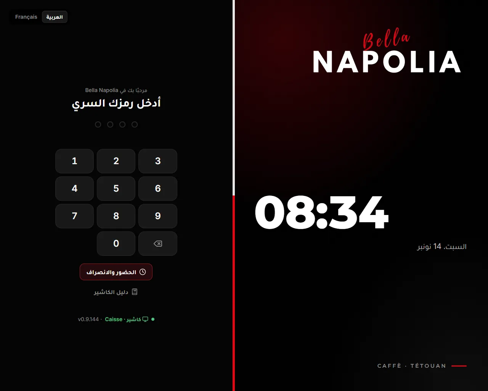
الدخول بالرمز السري
- في شاشة أدخل رمزك السري اكتب رمزك المكوّن من 4 أرقام. يدخل وحده بعد الرقم الرابع.
- خطأ؟ تظهر رمز غير صحيح. أعد المحاولة.
- بعد 5 أخطاء متتالية تنتظر دقيقة: رموز خاطئة كثيرة. انتظر 0:58. وبعد 10 أخطاء دقيقتين، وبعد 15 ثلاث دقائق.
- 10 أخطاء في 10 دقائق على الجهاز نفسه تقفل الرموز 10 دقائق، ويصل تنبيه إلى المالك: رموز خاطئة كثيرة على هذا الجهاز: انتظر 10 دقائق ثم أعد المحاولة. أُخبر المالك.
- إن كانت طلبات من الموقع تنتظر، تظهر فوق الأرقام: طلبات من الموقع بانتظار القبول. ادخل برمزك واقبلها.
- في الأسفل اسم الجهاز ونسخة الكاشير، ونقطة خضراء حين يكون مربوطًا.
- ليست لديك صلاحية البيع على الكاشير: رمزك صحيح، لكن دورك لا يبيع (مثل المطبخ). يمكنك تسجيل حضورك فقط.
يدخل فقط من دخل من قبل على هذا الجهاز نفسه خلال آخر 30 يومًا. المالك والمدير لا يدخلان بلا إنترنت. وتظهر لغيرهم: لا إنترنت: يدخل الآن من سبق له الدخول على هذا الجهاز فقط.
«الحضور والانصراف»: بداية العمل ونهايته
سجّل بداية عملك حين تصل، ونهايته حين تنصرف. هذا هو حضورك وساعات عملك.
- في شاشة الرمز اضغط الحضور والانصراف، ثم اكتب رمزك. (أو من قائمتك وأنت داخل: بداية العمل أو نهاية العمل · منذ 08:02.)
- يظهر اسمك، وآخر تسجيل على هذا الجهاز، وزرّان: بداية العمل ونهاية العمل. الزر المقترح أولًا ومملوء.
- اضغط الزر المناسب. تظهر مرحبًا …، سُجّلت بداية عملك 08:02، أو شكرًا …، سُجّلت نهاية عملك 16:05.
- البطاقة تُغلق وحدها بعد 30 ثانية إن لم تضغط شيئًا.
- من يفتح الوردية تُسجَّل بداية عمله وحدها.
- بعد بداية العمل، إن كانت لك مهام: 📋 عندك مهمة واحدة. افتح المهام.
- «آخر تسجيل» يعرض فقط ما سُجّل على هذا الجهاز في آخر 18 ساعة.
قبل أن تنصرف
حين تضغط نهاية العمل:
- مهامك غير المنجزة (مع الإنترنت): تُفتح قبل أن تنصرف. لكل مهمة: مرّرها إلى زميل، أو لم أُنجزها واكتب لماذا لم تُنجز؟ ثم أرسل. حين تجيب عن كلها يعمل زر انصرف.
- الصندوق: إن كنت أنت من فتح الوردية المفتوحة، يسألك الكاشير أن تغلقها أو تنصرف دون إغلاق برمز المالك أو المدير (فصل إغلاق الوردية).
- ثم تُسجَّل نهاية عملك، ويُقفل الكاشير.
«قفل»: حين تبتعد عن الكاشير
- من قائمتك (اسمك في أعلى الشاشة) ← قفل. يعود الكاشير إلى شاشة الرمز، ويبقى الطلب الذي على الشاشة كما هو.
- يُقفل وحده بعد دقائق دون لمس (حددها المالك)، إلا والدفع أو الإغلاق أو نافذة الموافقة مفتوحة.
- والكاشير مقفل يبقى يعمل: يستقبل طلبات الموقع ويرنّ لها، ويأخذ جولات النادل ويطبعها، ويرسل المبيعات.
- إعادة تشغيل الحاسوب لا تُخرجك: من كان داخلًا يبقى داخلًا. اضغط قفل دائمًا حين تبتعد.
قائمتك
المس اسمك في أعلى الشاشة. فيها بالترتيب:
- محفظتي، بداية العمل أو نهاية العمل، دليل الكاشير، إعادة طباعة آخر إيصال، أرقام مهمة، بلّغ عن عطل، أصناف نفدت، جرّب الأصوات.
- فاتح أو داكن للون الشاشة، وFrançais أو العربية للغة. يبقيان على هذا الجهاز لكل من يستعمله.
- قفل، وتحته رقم النسخة.
- من له صلاحية الإعدادات (المالك) يرى أيضًا: إعدادات الطابعة، والربط بقاعدة البيانات، والخروج من ملء الشاشة.
الصلاحيات ونافذة الموافقة
بعض الأعمال تحتاج صلاحية يحددها المالك لكل دور. إن لم تكن لك، لا يُمنع العمل: تفتح نافذة موافقة المدير.
- في أعلاها بالأصفر: هذا الإجراء يحتاج صلاحية: …، ثم ما تطلبه، والمبلغ، ويطلبها: اسمك.
- بالرمز: زميل له هذه الصلاحية (مدير أو مالك، أو موظف أعطاه المالك الصلاحية) يكتب رمزه. رمزه لا يُدخله إلى الكاشير.
- بالهاتف: اطلب موافقة المالك يرسل الطلب إلى المالك على تيليغرام، ومعه زرّا موافق ورفض. تظهر ينتظر موافقة المالك…: لا تُغلق النافذة. أمام المالك 10 دقائق.
- النتائج: يمضي العمل حين يوافق؛ أو رفض المالك.؛ أو لم يُجب المالك خلال 10 دقائق.
- لمسة خارج النافذة تلغي الطلب، وتسحب طلب تيليغرام معه.
| العمل | الصلاحية التي يحتاجها |
|---|---|
| الخصم | الخصم (وفوق النسبة التي حددها المالك: رمز المالك أو المدير) |
| حذف أو إنقاص صنف وصل إلى البار، مسح طلب أُرسل، تبديل بمشروب أرخص | حذف صنف أُرسل للبار أو المطبخ |
| الاسترداد | الاسترداد |
| كل مال يخرج من الصندوق: مصروف، مشتريات، تسبيق، سحب، إرجاع فرق نقدًا | المصاريف وإخراج المال من الصندوق |
| «افتح الصندوق» دون بيع | فتح الصندوق يدويًا |
| «ملخص الصندوق» | ملخص الصندوق قبل الإغلاق |
| «إغلاق الوردية» | إغلاق الوردية |
| «نفد» أو «متوفر» | تعديل القائمة |
| «ضيافة» | المالك وحده |
| «للعامل» | رمز الموظف الذي يشتري |
| الحضور، القفل، فتح الوردية، محفظتي، المهام، بلّغ عن عطل، أرقام مهمة، إعادة الطباعة | لا شيء |
رمز المالك أو المدير لا يعمل بلا إنترنت: موافقة المالك أو المدير بالرمز تحتاج الإنترنت. وطلب الهاتف أيضًا: لا إنترنت: يلزم الرمز. يعمل فقط رمز زميل له الصلاحية ودخل من قبل على هذا الجهاز.
فتح الوردية
الوردية هي صندوقك من الفتح إلى الإغلاق. كل بيع وكل حركة نقود تُسجَّل فيها. لا يُفتح إلا في الكاشير الرئيسي، وكاشير واحد فقط يعمل في الوقت نفسه.
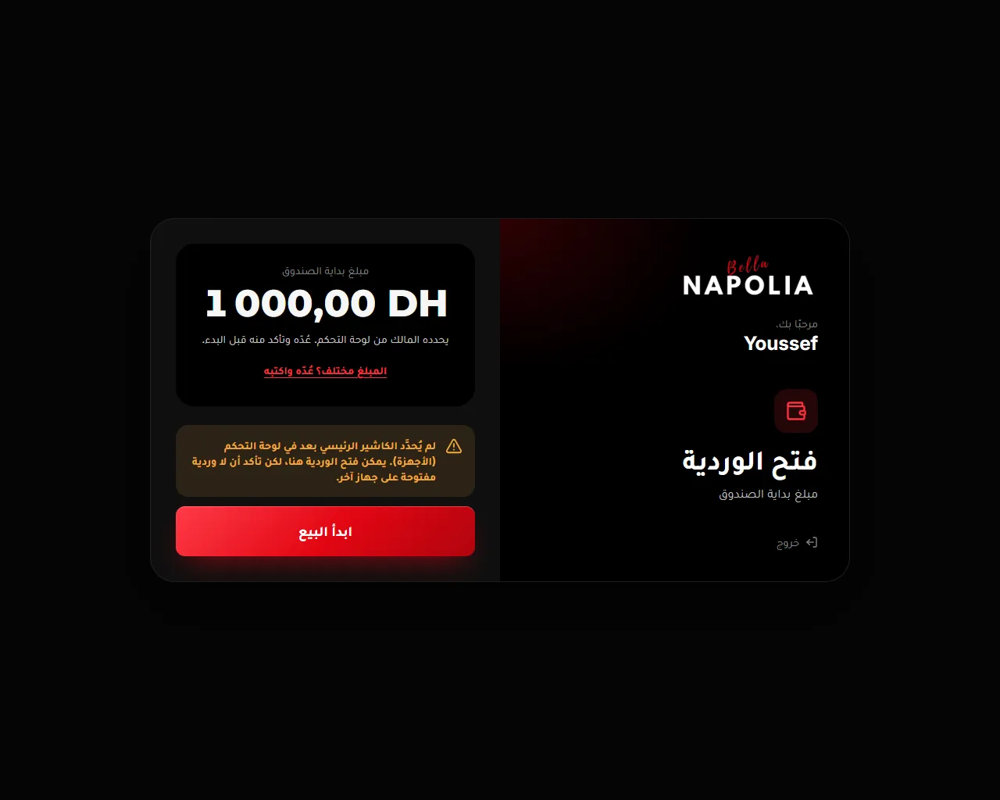
الفتح، خطوة بخطوة
- ادخل برمزك. إن لم تكن وردية مفتوحة، تظهر شاشة فتح الوردية.
- ترى مبلغ بداية الصندوق: ما تركته الوردية السابقة في الصندوق، أو المبلغ الذي حدده المالك.
- عُدّ النقود في الصندوق.
- المبلغ صحيح؟ اضغط ابدأ البيع.
- مختلف؟ اضغط المبلغ مختلف؟ عُدّه واكتبه، واكتب ما وجدته في الصندوق. يظهر الفرق بالأحمر ويُسجَّل الفرق ويصل تنبيه للمالك. ثم ابدأ البيع.
- تُسجَّل بداية عملك وحدها حين تفتح الوردية.
- خروج في هذه الشاشة يقفل الكاشير فقط.
رسائل الكاشير الرئيسي
- هذا الجهاز ليس الكاشير الرئيسي: الوردية تُفتح على الكاشير الرئيسي فقط. لا زر للبدء هنا. اعمل على الكاشير الرئيسي، أو اطلب من المالك تغييره.
- لم يُحدَّد الكاشير الرئيسي بعد…: يمكنك الفتح هنا، لكن تأكد ألا وردية مفتوحة على جهاز آخر.
- كاشير واحد فقط يعمل في نفس الوقت. أغلق الوردية على «…» أولًا: وردية مفتوحة على جهاز آخر. أغلقها هناك أولًا.
- استُرجعت طلبات مفتوحة من كاشير آخر: طلبات بقيت مفتوحة على الكاشير السابق جاءت إلى هنا. راجعها في «المعلّقة» و«الطاولات».
وردية من يوم سابق ما زالت مفتوحة
نسي أحد إغلاق وردية الأمس؟ يظهر وردية من يوم سابق ما زالت مفتوحة: أغلقها وعُدّ الصندوق قبل بدء يوم جديد، حتى لا تختلط مبيعات يومين في وردية واحدة. يظهر هذا من الساعة 05:00 صباحًا، بداية يوم المقهى: العمل بعد منتصف الليل يبقى في ورديته.
- ترى متى بدأت، ومبلغ بدايتها، ومن فتحها، وطلبات ما زالت مفتوحة.
- اقبض ما يُدفع الآن بزر دفع بجانب كل طلب.
- اضغط أغلق الوردية وانقل الطلبات المفتوحة (أو أغلق الوردية الآن إن لم يبقَ شيء). يحتاج صلاحية الإغلاق. عُدّ الصندوق كما في فصل إغلاق الوردية. ما بقي مفتوحًا ينتقل إلى الوردية الجديدة، ويُكتب في تقرير الإغلاق.
- بعد الإغلاق تعود إلى شاشة الرمز: ادخل وافتح وردية اليوم.
شاشة البيع
هنا تسجّل طلب الكونتوار. الأصناف في اليسار، والطلب في اليمين. تفتحها بزر البيع في أعلى الشاشة. هذه الشاشة واحدة سواء كان البار مشغّلًا أو مطفأ.
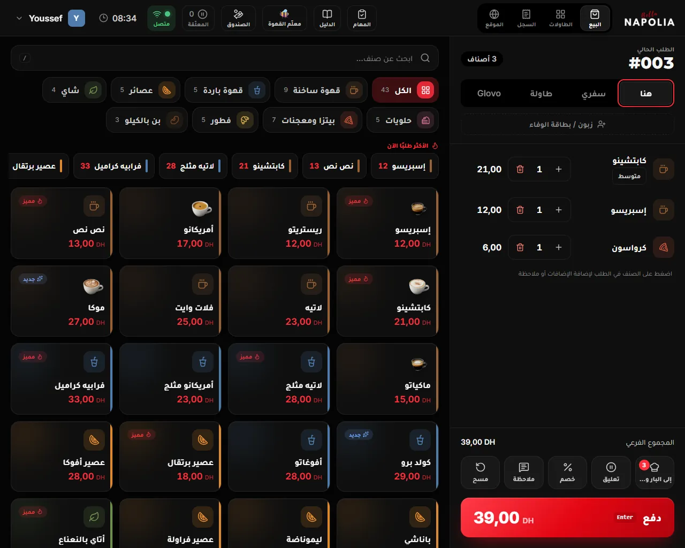
أجزاء الشاشة
- البحث ابحث عن صنف…: اكتب جزءًا من الاسم بالعربية أو بالفرنسية.
- الأقسام: الكل، ثم أقسام المقهى، وبجانب كل قسم عدد أصنافه.
- «الأكثر طلبًا الآن»: أزرار سريعة لما يُطلب كثيرًا في هذه الساعة. تظهر في «الكل» فقط، والبحث فارغ.
- بطاقات الأصناف: الصورة والاسم والسعر. وفوقها أحيانًا علامة: نفد، أو عرض بنسبة مثل 🏷️ -10%، أو سفري لصنف يُباع للسفري فقط، أو جديد، أو مميز.
- الطلب في اليمين: رقمه #012، ثم نوعه هنا سفري طاولة Glovo، ثم زبون / بطاقة الوفاء، ثم الأصناف والمجموع والأزرار.
يبدأ الترقيم من #001 كل يوم على الساعة 05:00 صباحًا، وهي بداية يوم المقهى.
البحث
- يبحث في أسماء الأصناف فقط، بالعربية أو بالفرنسية، ولو بجزء من الاسم. لا يبحث في الرموز ولا في الوصف.
- يتسامح مع الكتابة: الحركات، والهمزات (أ إ آ ← ا)، والتاء المربوطة والهاء، والياء والألف المقصورة، والحروف الفرنسية بلا نبرة. وإن لم يجد شيئًا يقارن الحروف دون حركات، فـ«كابوتشينو» تجد «كابتشينو».
- أثناء البحث تظهر النتائج من كل الأقسام.
- لمسة على صنف وجدته تضيفه وتُفرغ البحث. وزر Enter في لوحة المفاتيح يضيف أول صنف متوفر.
- إن لم يجد شيئًا تظهر لا توجد بيانات.
إضافة صنف بلمسة
- المس بطاقة الصنف. يُضاف إلى الطلب بالاختيار المعتاد لكل خيار إجباري، كالحجم والسكر.
- إن كان الصنف نفسه بالاختيارات نفسها في الطلب، يزيد عدده بواحد بدل سطر جديد.
- إن كان خيار إجباري بلا اختيار معتاد، تُفتح نافذة الخيارات لتختار بنفسك.
- البن بالكيلو يفتح نافذة الوزن (انظر «البن بالوزن» أسفله).
- السعر على البطاقة هو ما تضيفه اللمسة. الطلب يبدأ «هنا» بسعر المقهى. بعد سفري تصير الأسعار أسعار السفري، وبعد Glovo أسعار Glovo. وإن كان هناك عرض جارٍ يُطرح من السعر وحده.
- الصنف الذي يُباع سفري فقط، مثل القهوة بالحليب الكبيرة، يُحسب دائمًا بسعر السفري، ولو كان الطلب «هنا».
- «ذوق الزبون»: إن كانت على الطلب بطاقة زبون من النادي يأخذ عادة سكرًا معيّنًا، يختار الكاشير سكره وحده بدل المعتاد (انظر فصل بطاقة الوفاء).
- لا يُطبع شيء ولا يُرسل شيء عند الإضافة. والطلب يبقى محفوظًا في الكاشير ولو أُعيد تشغيله.
الخيارات والملاحظة على الصنف
تحت آخر صنف أضفته تظهر أزرار سريعة: الحجم، والسكر (بدون قليل عادي زيادة)، وزر ✎ خيارات. المس اسم أي صنف آخر لتظهر أزراره.
المس اسم الصنف في الطلب، أو ✎ خيارات، فتُفتح نافذة الخيارات:
- كل مجموعة مكتوب بجانبها إجباري أو اختياري. الإجباري يصير أحمر إن لم تختر فيه شيئًا، ولا يُقبل الحفظ حتى تختار.
- بجانب الاختيار المدفوع سعره، مثل +5. و≤ 2 تعني أقصى عدد. و1 مجانًا يعني أن الأول مجاني.
- سفري (هذا الصنف فقط): في طلب «هنا» أو «طاولة»، لصنف واحد يأخذه الزبون معه. يُحسب بسعر السفري ويُطبع «سفري» بجانبه للبار.
- ملاحظة على الصنف: ساخن جدًا بارد قليلًا بدون رغوة منفصل، أو اكتب ما تريد. تُطبع للبار تحت الصنف.
- العدد بـ − و+، ثم أضف إلى الطلب لصنف جديد، أو حفظ لصنف موجود.
- في صنف عدده أكثر من واحد يظهر غيّر الكل (3) وغيّر واحدًا فقط: الثاني يغيّر كوبًا واحدًا ويترك الباقي.
- كيف أحضّره؟ يفتح وصفة المشروب بالاختيارات التي في الطلب.
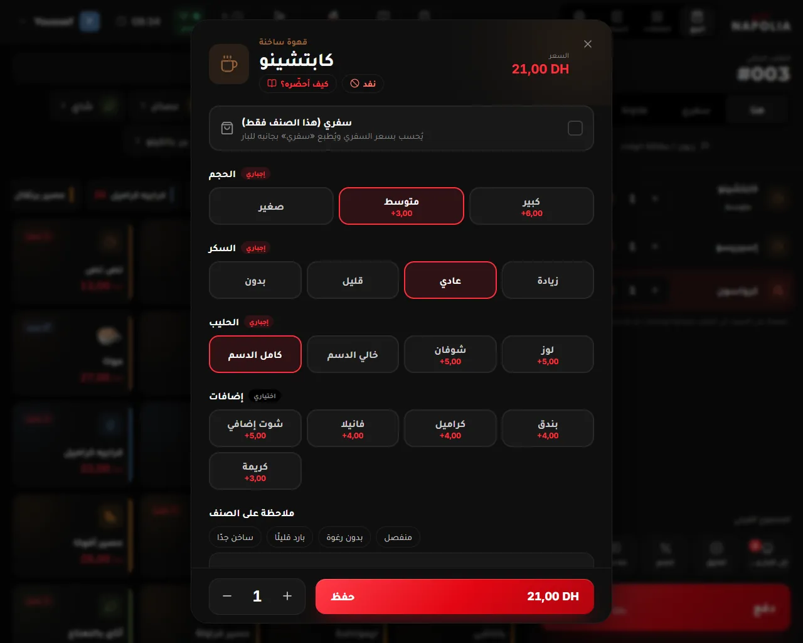
لمسة خارج النافذة، أو زر Escape، تغلقها دون حفظ.
البن بالوزن
لا يوجد ميزان مربوط بالكاشير: زِن على ميزان المقهى، ثم اكتب الغرامات.
- المس صنف البن بالكيلو. تُفتح نافذة الوزن وفيها سعر الكيلو.
- في بن CARRION يأتي سؤال أولًا: كيف سيحضّر الزبون قهوته؟ اختر: تركي (35) إسبريسو منزلي (39) موكا بوت (45) تقطير V60 (59) فرنش برس (74). يظهر رقم الطاحونة كبيرًا مع شرحه، فاضبط الطاحونة عليه. ويُطبع الاختيار في الوصل.
- اختر بالوزن (125 غ، 250 غ، 500 غ، 750 غ، 1 كغ أو اكتب الغرامات) أو بالمبلغ (20، 30، 50، 100، 200 درهم أو اكتب المبلغ). بالمبلغ يحسب الكاشير الوزن الذي يساويه.
- اضغط أضف إلى الطلب · 250 غ.
لتغيير الوزن بعدها المس زر الوزن على السطر. سطر البن بالوزن لا يُجمع مع غيره، ولا يُبدَّل.
تعديل سطر أو حذفه
- + و− يغيّران العدد. وحين يكون العدد واحدًا يصير − سلة حذف.
- قبل أن يصل الصنف إلى البار: عدّل واحذف بحرية، بلا صلاحية ولا تسجيل.
- بعد أن يصل: تظهر بجانبه علامة ✓✓. أي إنقاص أو حذف يسأل أولًا هل حضّر البار…؟ ويحتاج صلاحية الحذف. والتغيير يصير «تبديلًا». التفاصيل في فصل تغيير طلب وإرجاعه.
ملاحظة على الطلب كله
زر ملاحظة يفتح ملاحظة على الطلب: زبون دائم مستعجل تقديم معًا حساسية، أو اكتب ما تريد، ثم حفظ. تصل إلى البار مرة واحدة، مع أول إرسال. ولا تُطبع في وصل الزبون.
تعليق طلب: «المعلّقة»
زبون سيدفع لاحقًا، أو تريد أن تبدأ طلبًا آخر؟ اضغط تعليق. يذهب الطلب إلى المعلّقة في أعلى الشاشة، ويأخذ الطلب التالي رقمًا جديدًا.
- زر المعلّقة يعرض عددها: رمادي حين لا شيء، وبرتقالي حين يوجد طلب معلّق، وأحمر حين يطلب زبون الحساب.
- في النافذة كل طلب برقمه ونوعه ومنذ متى، والزبون يطلب الحساب إن طلبه. والطلب الأحمر بخط عريض من يوم سابق نُسي من يوم آخر: عالجه أولًا.
- المس الطلب ليعود إلى الشاشة. وما كان على الشاشة يذهب هو إلى المعلّقة.
- لا حذف من القائمة: افتح الطلب ثم اضغط مسح.
- طلبات الطاولات ليست هنا: هي في الطاولات.
«مسح» الطلب
اضغط مسح، فيصير متأكد؟ لمدة 3 ثوانٍ: اضغطه مرة ثانية.
- لم يصل منه شيء إلى البار: يُمسح بلا صلاحية.
- وصل منه شيء: يسأل هل حُضّر؟ عن الطلب كله، ثم يحتاج صلاحية الحذف، ويُسجَّل في سجل المراقبة.
- طلب من الموقع يُمسح: يرى الزبون على هاتفه أن الطلب أُلغي في المقهى.
بعد «مسح» يبدأ الطلب التالي من جديد، بلا نوع مختار، وبأسعار المقهى.
«تكرار آخر طلب»
حين يكون الطلب فارغًا يظهر تكرار آخر طلب: يضيف أصناف آخر طلب دُفع في هذا الكاشير. ما نفد منها أو أخفاه المالك لا يُضاف، ويقول لك الكاشير: أُضيف المتوفر فقط من آخر طلب.
الصنف الذي نفد
ثلاث طرق لتجعل صنفًا نفد أو لتعيده متوفر:
- اضغط على بطاقته ضغطة طويلة (أكثر من نصف ثانية). الضغطة نفسها تعيده متوفرًا.
- زر نفد في أعلى نافذة الخيارات.
- قائمتك (اسمك في أعلى الشاشة) ← أصناف نفدت: المس صنفًا ليصير «نفد»، والمسه من جديد ليعود «متوفر».
- يحتاج صلاحية تعديل القائمة. إن لم تكن لك، تظهر نافذة الموافقة.
- يصل إلى كل الأجهزة: الكاشير الآخر، وهاتف النادل، والموقع. والصنف الذي نفد يبقى ظاهرًا رماديًا، ولمسه لا يفعل شيئًا.
«نفد» بلا إنترنت لا يثبت: يعود الصنف متوفرًا بعد إعادة التشغيل. أعد وضعه حين يعود الاتصال.
صنف لا تجده؟
قد يخفي المالك صنفًا أو قسمًا عن الكاشير من لوحة التحكم («أين يظهر؟»). لا يظهر في البطاقات ولا في البحث. اسأل المسؤول.
«اقترح على الزبون»
بعد أن تضيف صنفًا بيدك، قد يظهر تحت الطلب شريط فيه صنف يناسبه، باسمه وسعره، مع أضف و✕. اقترحه على الزبون بكلمة: إن قبل اضغط أضف، وإلا اضغط ✕ أو تابع. لا يُضاف شيء وحده، ولا يظهر في طلب Glovo. والمالك هو من يختار الاقتراحات.
لوحة المفاتيح (إن وُجدت)
الكاشير يعمل باللمس. وإن وُصلت لوحة مفاتيح، فهذه اختصاراتها:
| الزر | ما يفعله |
|---|---|
| F4 | تعليق الطلب |
| F9 أو Enter | الدفع، حين في الطلب أصناف |
| / | المؤشر في البحث |
| 1 و2 | في نافذة «هنا أم سفري؟»: 1 هنا، 2 سفري |
«الدليل»: دليل المشروبات
زر الدليل في أعلى الشاشة يفتح دليل المشروبات: لكل مشروب المقادير والخطوات المعتمدة والكأس والزينة والحساسية. ومن سطر في الطلب، كيف أحضّره؟ يفتح المشروب نفسه بما اختاره الزبون. يعمل بدون إنترنت.
أنواع الطلب
في أعلى الطلب أربعة أزرار: هنا سفري طاولة Glovo. وتصل طلبات أخرى وحدها: من هاتف النادل، ومن الموقع.
«هنا» و«سفري»
- هنا: يشربه الزبون داخل المقهى أو في الترّاس، بسعر المقهى.
- سفري: يأخذه معه. تصير الأسعار أسعار السفري، وتظهر أسعار السفري مطبّقة. تُطبع للبار A EMPORTER و«سفري»، فيُحضَّر في كوب سفري.
- الطلب الجديد لا يضيء فيه زر، والبطاقات بسعر «هنا» حتى تختار.
نافذة «هنا أم سفري؟»
إن ضغطت دفع أو إلى البار في طلب كونتوار لم تختر نوعه، تسألك: اسأل الزبون: سيجلس داخل المقهى أو في الترّاس، أم سيأخذ طلبه معه؟
- زرّان كبيران: هنا (داخل المقهى أو الترّاس) وسفري (يأخذه معه)، وعلى كل واحد المجموع الذي يصير إليه.
- الجواب يغيّر الأسعار، وما يُطبع للبار، والكأس، ولا تُسأل مرة ثانية لهذا الطلب.
- إغلاق النافذة يلغي الدفع أو الإرسال.
- تُسأل أيضًا لطلب الموقع الذي يُستلم من الكونتوار، وفيها ما اختاره الزبون: اختار الزبون في الموقع: …
«طاولة»
يفتح اختر طاولة (الداخل والترّاس). الطاولة المشغولة مكتوب عليها مشغولة، واختيارها يعرض ضمّ الحسابين. كل شيء عن الطاولات في فصل الطاولات.
«Glovo»
- اضغط Glovo. يظهر الحقل الأصفر رقم طلب Glovo: اكتب الرقم الظاهر في تطبيق Glovo. وتظهر أسعار Glovo مطبقة.
- أضف الأصناف. لا زبون ولا بطاقة وفاء في طلب Glovo.
- عند الدفع اختر: Glovo نقدًا إن كان الموزّع سيسلّم المبلغ نقدًا (يدخل الصندوق، ويُفتح الدرج)، أو Glovo أونلاين إن دفع الزبون في التطبيق (لا يدخل الصندوق).
- تنبيه: طلب Glovo بهذا الرقم مسجّل مسبقًا.: تحقق من الرقم، لئلا تسجّل الطلب مرتين.
- ورقة البار عليها GLOVO والرقم بخط كبير، ليُغلَّف للموزّع.
- لا دَين، ولا للعامل، ولا ضيافة، ولا تبديل في طلب Glovo. والاسترداد كامل فقط.
طلبات هاتف النادل
تصل جولات النادل إلى الكاشير الرئيسي وحدها، وتنضم إلى طلب الطاولة (فصل الطاولات). وزبون النادل الذي لا طاولة له يُفتح طلبه لـ الاسم في «المعلّقة».
طلبات الموقع: تبويب «الموقع»
الزبون يطلب من الموقع، من طاولته أو قبل أن يصل. الطلب الجديد يرنّ كل 30 ثانية حتى تجيبه، ولو كان الكاشير مقفلًا، والرقم الأحمر على الموقع عدد ما ينتظر جوابك. والموقع لا يقبل طلبات إلا والكاشير شغّال.
في بطاقة كل طلب: W12، ونوعه (طاولة S3، أو هنا (استلام من الكونتوار)، أو سفري (استلام من الكونتوار))، والمجموع، ومنذ متى، والاسم والهاتف، وبطاقة الوفاء إن كان للرقم بطاقة، والأصناف والملاحظات. والزبون في الطريق بالأخضر إن قال إنه قادم.
جواب طلب جديد
- راجع الأصناف: هل كلها متوفرة؟
- قبول وإرسال للبار: يذهب إلى «المعلّقة» (أو إلى حساب طاولته)، ويصل إلى البار. لطلب لساعة لاحقة: قُبل الطلب. تُطبع تذكرة البار وحدها على الساعة …
- أو رفض مع السبب: نفد صنف، المقهى مزدحم جدًا، طلب غير صحيح، أو اكتب سببًا. يراه الزبون.
هذا الطلب قُبل من قبل: قبله كاشير آخر، أو قبلته أنت. تعذّر قبول الطلب: تحقق من الاتصال وأعد المحاولة: لا إنترنت.
بعد القبول
- جاهز: يُخبَر الزبون على هاتفه أن طلبه جاهز. والبار مشغّل قد ينتظر البار أولًا.
- ادفع W12: يفتح الطلب ونافذة الدفع. والطلب نفسه في «المعلّقة» أيضًا.
- طلب لساعة لاحقة يذهب إلى البار وحده قبل وقته بقليل، أو فورًا حين يضغط الزبون «أنا في الطريق»: W12 · الزبون في الطريق: حضّروه الآن. وزر ابدأ التحضير الآن يرسله قبل ذلك.
- إلغاء الطلب: اتصل الزبون وألغاه أو لم يأتِ الزبون. إن كان البار قد أخذه: «هل حُضّر؟» وصلاحية الحذف. يُخبَر الزبون على صفحة طلبه.
- بعد وقته بنصف ساعة يظهر لم يأتِ: سُجّل غياب الزبون وأُزيل الطلب.
- ألغاه الزبون قبل التحضير: ألغى الزبون طلبه W12… مع صوت هابط.
- جلس الزبون ومسح رمز طاولته: جلس الزبون على طاولة S3: نُقل طلبه إليها.
«ينتظرون الوصول»
زبون جديد بلا بطاقة وفاء طلب «في المقهى» أو «آخذه معي» دون وقت: طلبه لا يرنّ ولا يُحضَّر حتى يصل. يظهر في القسم الهادئ ينتظرون الوصول، وينتظر وصول الزبون · ينتهي 10:40.
- حين يصل الزبون ويقول رقم طلبه: وصل، حضّره.
- إن لم يصل، يختفي الطلب وحده بعد ساعة.
بطاقة الوفاء الظاهرة تأتي من الرقم الذي كتبه الزبون. ليست دليلًا على أن صاحبها أمامك.
«أوقف طلبات الموقع»
زحمة شديدة؟ اضغط أوقف طلبات الموقع واختر 15 أو 30 أو 60 دقيقة. تتوقف «في المقهى» و«آخذه معي» ثم تعود وحدها، وتستمر طلبات الطاولات، ويعلم المالك. وأعد تشغيلها يعيدها قبل الوقت.
ما يراه الزبون على هاتفه
- تم استلام طلبك، بانتظار تأكيد المقهى ← تم التأكيد، نحضّر طلبك الآن ← طلبك جاهز! ← تم التسليم. بالهناء!
- أو: نعتذر، لم نتمكن من قبول الطلب مع سببك.
- وبعد 8 دقائق بلا جواب: لم يؤكّد المقهى طلبك بعد…، ويصل تنبيه إلى المالك بعد 10 دقائق. أجب كل طلب بسرعة.
حالات الطلب
كل كلمة أو لون يظهر على طلب أو طاولة، ومعناه، وما تفعله بعده. ارجع إلى هذا الفصل كلما رأيت حالة لا تعرفها.
الأصناف في الطلب
| ما تراه | معناه | ماذا تفعل |
|---|---|---|
| صنف بلا علامة | لم يُرسل إلى البار بعد. يُعدّ في الرقم الأحمر على «إلى البار» | إلى البار أو الدفع. يُحذف بحرية |
| ✓✓ بجانب الاسم | وصل كله إلى البار أو المطبخ | أي إنقاص أو تغيير يسأل «هل حُضّر؟» |
| بدل لاتيه بالأزرق | تبديل: مشروب مكان آخر، لم يُرسل بعد | إلى البار أو الدفع |
| سفري على صنف | هذا الصنف وحده يأخذه الزبون معه | — |
| نص برتقالي مائل | ملاحظة على الصنف | — |
| صنف أُرسل فقد ✓✓ | تغيّرت ملاحظته أو «سفري»: يُرسل من جديد بعلامة «تغيّر» | إلى البار |
الطاولة
| الحالة | معناها | ماذا تفعل |
|---|---|---|
| فارغة | لا حساب مفتوح | المسها لطلب جديد |
| مشغولة | حساب مفتوح فيه أصناف | المسها لنافذتها |
| تنتظر الحساب 🧾 | طلب الزبون الحساب (من هاتف النادل أو من الكاشير) | اطبع الحساب ثم الدفع الآن |
| محجوزة | ضُغط «حجز» | افتح الطاولة حين يصل أصحابها |
| مدفوعة ⏳ | دفع الزبون وما زال ينتظر طلبه | والبار مطفأ: جاهز ✓ حين يجهز. ثم غادر حين يغادر |
| مدفوعة · سُلِّم | دفع وقُدّم له طلبه | غادر حين يغادر. وتعود فارغة وحدها بعد مدة يحددها المالك |
الدقائق على بطاقة الطاولة تصير حمراء بعد 45 دقيقة، أو حين يكون الطلب من يوم سابق.
مراحل التحضير (على الطاولة وفي نافذتها)
| المرحلة | معناها | ماذا تفعل | البار |
|---|---|---|---|
| ⚠ لم يُرسل | الجولة لم تصل إلى البار: لا ورقة، أو الشاشة لم تجب | أخبر البار بصوتك، أصلح الطابعة أو الإنترنت، ثم أرسل الآن | الحالتان |
| ⏳ لم يبدأه البار بعد | على شاشة البار في «جديد» | انتظر. بعد 10 دقائق ينبّهك الكاشير | مشغّل |
| يحضّره كريم | مشغّل: البارمان بدأها. مطفأ: أنت، أو من كان داخلًا حين وصلت | مشغّل: انتظر «جاهز ✓» من البار. مطفأ: حضّر، ثم الطلب جاهز للنادل | الحالتان |
| قيد التحضير | جولات يحضّرها أكثر من شخص، أو بلا اسم | كما فوقه | الحالتان |
| مشروبات البار جاهزة | المشروبات جاهزة، والأكل لم يجهز | حين يجهز الأكل: الطلب جاهز للنادل | مشغّل |
| ✓ جاهز | أُعلن جاهزًا. هاتف النادل يرنّ كل 20 ثانية | لا شيء | الحالتان |
| ✓ سُلِّم | حمله النادل وضغط «استلمت» | لا شيء. اقبض حين يطلب الحساب | الحالتان |
جولة النادل كما يراها على هاتفه
إن قال لك النادل ما يظهر على هاتفه:
- في الانتظار: لا إنترنت في الهاتف بعد.
- في الطريق إلى الكاشير: أُرسلت، ولم يأخذها الكاشير بعد.
- لم يصل إلى الكاشير (بعد 45 ثانية): الكاشير الرئيسي مطفأ، أو بلا إنترنت، أو ورديته مغلقة. تحقّق منه.
- أُلغي: بقيت أكثر من ساعتين دون أن تصل.
- لم يُرسل: وصلت إلى الكاشير ولم تخرج ورقتها. انظر «⚠ لم يُرسل» فوقه.
في «السجل»
| العلامة | معناها |
|---|---|
| بلا علامة | مدفوع |
| دَين | لم يدفعه الزبون بعد (فصل دَين) |
| للعامل · الاسم | مشروب موظف، من أجره |
| ضيافة | مجاني بموافقة المالك |
| مُسترد، والمجموع مشطوب | أُرجع ثمنه كله |
| مُسترد جزئيًا | أُرجع جزء منه: يظهر سطران بالرقم نفسه، البيع وما أُرجع |
وبجانب كل طلب أيقونة الدفع: ورقة نقود (نقدًا)، بطاقة، دراجة صفراء (Glovo)، يد حمراء (دين ينتظره المقهى)، أو «نقدًا + بطاقة».
طلب الموقع
| الحالة | أين وكيف تظهر | الأزرار |
|---|---|---|
| جديد ينتظر جوابك | «جديدة»، إطار أحمر، يرنّ كل 30 ثانية | رفض / قبول وإرسال للبار |
| ينتظر وصول الزبون | قسم هادئ «ينتظرون الوصول»: زبون جديد بلا بطاقة. لا يرنّ ولا يُحضَّر حتى يصل | إلغاء الطلب / وصل، حضّره |
| مقبول لساعة لاحقة | «لساعة لاحقة»، لـ 11:45 · بعد 30 د | ابدأ التحضير الآن |
| قيد التحضير | «قيد التحضير». بعد وقته: متأخر 5 د | جاهز، ادفع W12، إلغاء الطلب |
| جاهز من الكاشير، ينتظر البار | والبار مشغّل: جاهز من الكاشير · ينتظر البار | — |
| جاهز | «جاهزة» | ادفع W12، إلغاء الطلب أو لم يأتِ |
المدفوع والمرفوض والملغى يخرج من القائمة. والتفاصيل في فصل أنواع الطلب.
العمل والبار مشغّل
«البار مشغّل» يعني أن في البار شاشة: كل ما تسجّله يظهر عليها، والبارمان يحضّر منها ويضغط «جاهز ✓». يشغّلها المالك من لوحة التحكم، غالبًا في الصيف. وقد تُطبع ورقة البار أيضًا، إن اختار المالك ذلك.
هذا الفصل للبار المشغّل. طريقة عملك اليوم في فصل العمل والبار مطفأ. ولقراءة هذا الفصل اختر البار مشغّل في الأعلى.
«إلى البار»: متى وكيف
الزر في أسفل الطلب: إلى البار، أو إلى المطبخ، أو إلى البار والمطبخ، حسب الأصناف. الرقم الأحمر عليه هو عدد الأصناف التي لم تُرسل بعد.
- اضغط إلى البار. في طلب الكونتوار يسألك أولًا هنا أم سفري؟ إن لم تختر.
- يذهب ما لم يُرسل فقط، وملاحظة الطلب مرة واحدة، ومعه اسم يُنادى به: اسم زبون النادل، أو الاسم الأول لزبون النادي.
- تظهر أُرسل للتحضير. وفي طلب طاولة: أُرسل للتحضير · الطلب على الطاولة S3، والشاشة جاهزة للطلب التالي.
يُرسل وحده، دون أن تضغط «إلى البار»:
- عند دفع طلب الكونتوار: يصل إلى شاشة البار مع الدفع.
- عند تعليق طلب طاولة.
- جولات هاتف النادل: يأخذها الكاشير الرئيسي ويرسلها وحده.
إذن تضغط إلى البار حين يُحضَّر الطلب قبل الدفع: طاولة، أو زبون يدفع لاحقًا.
شاشة البار
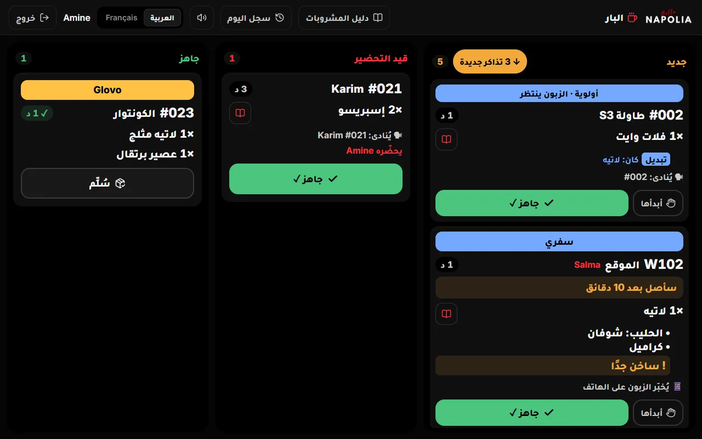
- ثلاثة أعمدة: جديد، قيد التحضير، جاهز.
- على البطاقة: الرقم، والمكان (طاولة S5، الموقع، الكونتوار)، والدقائق: برتقالية بعد 5، حمراء بعد 10.
- شريط أولوية · الزبون ينتظر لمشروب بُدّل أو تغيّر: يأتي أولًا. وشريط سفري أو Glovo.
- من يُخبَر حين يجهز: 🔔 يرنّ هاتف النادل، 📱 يُخبَر الزبون على الهاتف، 🗣 يُنادى: #021 Karim، أو 🍽 مع أكل: الإعلان من الكاشير.
- الأزرار: أبدأها ثم جاهز ✓، ثم سُلِّم حين يُسلَّم. والبارمان يتراجع خلال دقيقة واحدة.
- يخرج الطلب من «جاهز» وحده بعد 10 دقائق للكونتوار، و30 دقيقة للطاولات والموقع وGlovo.
حين يجهز الطلب
- طلب الكونتوار: ينادي البار الزبون برقمه أو باسمه. ويظهر في الكاشير جاهز من البار: … مع نغمة قصيرة.
- طلب طاولة: يرنّ هاتف النادل كل 20 ثانية حتى يضغط استلمت. وتصير الطاولة جاهز ثم سُلِّم.
- طلب الموقع: يُخبَر الزبون على هاتفه.
- طلب فيه أكل: حين يجهز البار تظهر مشروبات البار جاهزة، ولا يرنّ هاتف النادل بعد. حين يجهز الأكل اضغط أنت الطلب جاهز للنادل في نافذة الطاولة.
«الطلب جاهز للنادل» والبار لم ينتهِ
إن ضغطت الطلب جاهز للنادل · البار لم يُنهِ بعد، تسألك نافذة البار لم يُنهِ بعد: انتظر البار أو نعم، جاهز. وعلى شاشة البار تظهر الكاشير قال جاهز: هل حضّرته؟. مشروب البار وحده لا يُعلن جاهزًا إلا من البار.
تنبيهات
- … في البار منذ 10 د، ولم يلمسها أحد على الشاشة (أحمر، مع صوت): اذهب إلى البار وانظر.
- لم يصل الطلب إلى البار: شاشة البار لا تجيب (لا إنترنت؟). أعد الإرسال، أو أخبرهم بالطلب.: أخبر البار بصوتك الآن، ثم أعد الإرسال حين يعود الاتصال.
إلغاء مشروب لم يُحضَّر
في نافذة هل حُضّر؟ ترى ما تقوله الشاشة: البار: لم يبدأه البار بعد، أو البار: يحضّره كريم، أو البار: جاهز. حين تختار لم يُحضَّر بعد يُشطب المشروب على شاشة البار، ويظهر عليها أُلغي مع صوت (فصل تغيير طلب وإرجاعه).
العمل والبار مطفأ
«البار مطفأ» يعني أن لا شاشة في البار: الكاشير هو كل شيء. يطبع ورقة البار على الطابعة، فيحضّر منها من في البار (أو أنت). والكاشير نفسه يتابع مراحل الطاولات: يحضّره، جاهز، سُلِّم.
هذا الفصل للبار المطفأ. طريقة عملك اليوم في فصل العمل والبار مشغّل. ولقراءة هذا الفصل اختر البار مطفأ في الأعلى.
ورقة البار
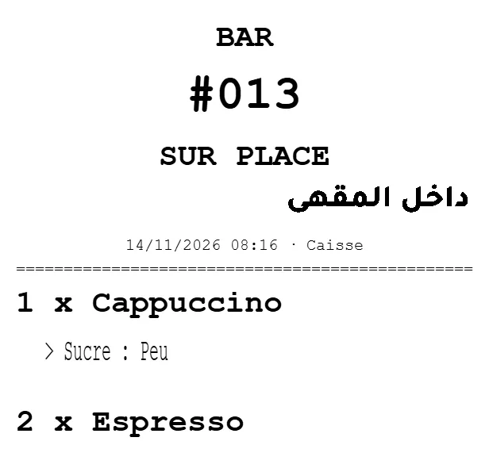
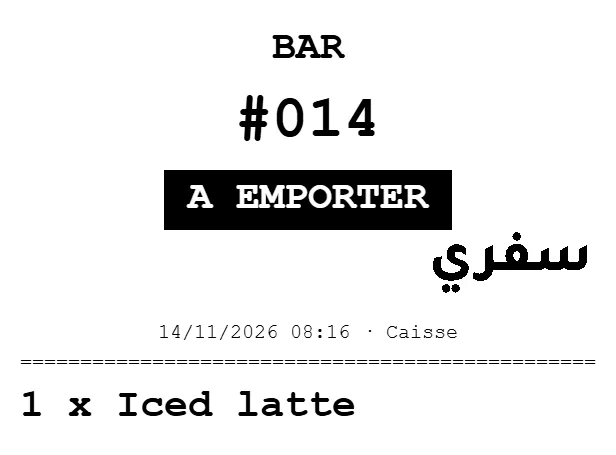
على الورقة: BAR، ورقم الطلب (#012، أو W12 لطلب الموقع)، ونوعه:
- SUR PLACE و«داخل المقهى»، أو A EMPORTER و«سفري»، أو TABLE S5، أو GLOVO ورقمه.
- PAYEE و«طاولة 5 · مدفوعة»: زبون دفع وجلس ينتظر.
- لـ Karim: الاسم الذي يُنادى به.
- كل صنف 2 x Espresso، وتحته الخيارات بعد >، وملاحظته بعد !، وملاحظة الطلب NOTE : ….
- ECHANGE: مشروب مكان آخر (تبديل). MODIFIE: تغيّرت ملاحظته، فالورقة السابقة لاغية. RENVOI و«إعادة إرسال · لا يُحضَّر مرتين»: نسخة ثانية لما أُرسل.
ورقة البار فيها أصناف البار وحدها. والأكل يخرج على ورقة المطبخ CUISINE.
متى تُطبع
- حين تضغط إلى البار.
- عند دفع طلب الكونتوار.
- عند تعليق طلب طاولة.
- حين تصل جولة من هاتف النادل: تُطبع وحدها.
- أرسل الآن في نافذة الطاولة، وأعد الإرسال بعد الدفع، وأعد الإرسال للبار والمطبخ في «السجل».
الورقة لم تخرج
رسالة حمراء لعشر ثوانٍ: لم يصل الطلب إلى البار: … أعد الإرسال، أو أخبرهم بالطلب. والسبب أحد هذه: لا توجد طابعة مضبوطة، الطابعة مطفأة، الطابعة لم تطبع (ورق؟)، الطابعة لا تجيب.
- أخبر البار بالطلب بصوتك الآن.
- أصلح الطابعة: شغّلها، أو ضع الورق، أو أغلق الغطاء.
- أعد الإرسال: إلى البار، أو أرسل الآن في نافذة الطاولة. الورقة التي فشلت لا تخرج وحدها لاحقًا.
جولة لم تُطبع ورقتها تبقى ⚠ لم يُرسل على الطاولة، ولا تُعلن جاهزة، فلا يرنّ هاتف النادل لها. أصلح الطباعة أولًا، ثم أرسل الآن.
طلب الكونتوار
تسجّل وتقبض، فتخرج الورقة في البار. يحضّر البار منها، ثم ينادي الزبون برقمه أو باسمه. لا مراحل لطلب الكونتوار في الكاشير: الورقة هي الطلب.
مراحل الطاولة: يحضّره، جاهز، سُلِّم
- تصل جولة من النادل، أو ترسل أنت أصنافًا لطاولة. تُطبع الورقة، وتظهر الجولة على الطاولة يحضّره اسمك: اسم من كان داخلًا إلى الكاشير.
- حضّر المشروبات من الورقة.
- حين تجهز، افتح الطاولة واضغط الطلب جاهز للنادل. أو من زر قيد التحضير في الطاولات: جاهز ✓ بجانب الجولة.
- تظهر لخمس ثوانٍ جاهز ✓ · طاولة S5 مع تراجع، ثم أُعلم النادل: الطلب جاهز. يرنّ هاتفه كل 20 ثانية حتى يضغط استلمت.
- حين يضغط النادل «استلمت» تصير الجولة سُلِّم. لا زر «سُلِّم» في الكاشير.
- قيد التحضير في أعلى شاشة الطاولات: كل جولة لم تُعلن جاهزة، الأقدم أولًا. وهو المكان الوحيد لإعلان جاهزية طلب زبون النادل الذي لا طاولة له.
- بلا إنترنت: لم يصل التنبيه للنادل (لا إنترنت). حاول مرة أخرى. نادِه بصوتك.
إلغاء مشروب لم يُحضَّر
حين تختار لم يُحضَّر بعد في نافذة هل حُضّر؟ تُطبع للبار ورقة ANNULÉ و«أُلغي · لا يُحضَّر». إن لم تخرج: لم تُطبع ورقة الإلغاء للبار: أخبروا البار بالإلغاء. أخبرهم بصوتك.
الطاولات
تبويب الطاولات في أعلى الشاشة، والرقم الأحمر عليه عدد الطاولات المفتوحة. الترتيب: S1 إلى S8، ثم C1 وC2، ثم T1 إلى T7. وإن رسم المالك المقهى، تظهر الطاولات على رسم المقهى، ويمكنك اختيار القائمة.
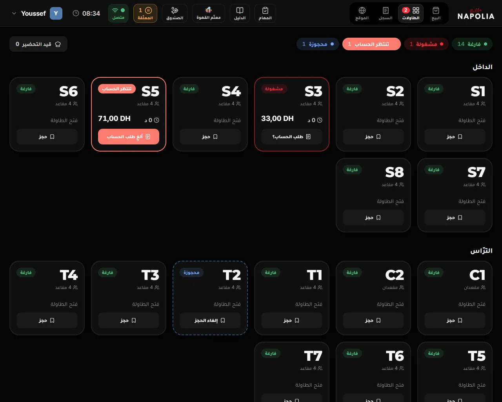
في أعلى الشاشة
- عدد الطاولات في كل حالة: فارغة، مشغولة، تنتظر الحساب، محجوزة. وحالات كل طاولة في فصل حالات الطلب.
- قيد التحضير: كل جولة لم تُعلن جاهزة، الأقدم أولًا. يصير برتقاليًا حين يكون فيه شيء.
طلب طاولة جديد
- المس طاولة فارغة، فيُفتح طلب جديد لها على شاشة البيع، وفوقه طاولة S3 ▾. أو في شاشة البيع اضغط طاولة واختر من اختر طاولة.
- أضف الأصناف.
- اضغط إلى البار، أو تعليق الذي يرسل أولًا. يعود الطلب إلى طاولته، وتفرغ الشاشة للطلب التالي.
لا يتحوّل إلى «هنا» أو «سفري» أو «Glovo»: هذا طلب الطاولة S3 وقد أُرسل: يبقى للطاولة. للطلب التالي اضغط «تعليق». ويمكن نقله إلى طاولة أخرى.
نافذة الطاولة
المس طاولة مشغولة، فتُفتح نافذتها: طاولة S5، ومفتوحة منذ 12 د، والمجموع، ثم الجولات، كل جولة بحالتها ومن أرسلها: الجولة 1 من هاتف النادل، أو أضافها الكاشير.
| الزر | ما يفعله |
|---|---|
| الدفع الآن | يفتح الطلب ونافذة الدفع (بلا سؤال «هنا أم سفري؟») |
| فتح الطلب / إضافة | يفتح الطلب على شاشة البيع لتضيف أصنافًا |
| الطلب جاهز للنادل | يعلن الجولات جاهزة، فيرنّ هاتف النادل (فصل البار مطفأ، وفصل البار مشغّل) |
| اطبع الحساب | يطبع الحساب ليحمله النادل. ليس وصلًا، ولا يُسجَّل |
| نقل أو ضمّ | ينقل الطلب إلى طاولة أخرى، أو يضمّه إلى حسابها |
| طلب الحساب؟ / ألغِ طلب الحساب | يجعل الطاولة «تنتظر الحساب»، أو يلغي ذلك |
| أرسل الآن | بجانب جولة «لم يُرسل»: يعيد إرسالها حين تعمل الطابعة أو الإنترنت |
| كتاب من الرف لهذه الطاولة | يسجّل كتابًا أُعطي للطاولة (أسفله) |
جولات هاتف النادل
- يرسل النادل الجولة من هاتفه، فيأخذها الكاشير الرئيسي وحده، ولو كان مقفلًا. تنضم إلى طلب الطاولة، وتُطبع وتُرسل للبار وحدها.
- رسالة خضراء مع صوت: 📱 طاولة S5 · طلب من هاتف النادل · Ali. لا شيء عليك.
- رسالة زرقاء تنتهي بـ · أُرسلت 16:41: جولة وصلت متأخرة. تأكد أنها ما زالت مطلوبة، وأنك لم تكتبها بيدك من قبل.
- صنف غير معروف في الكاشير لم يُضف: صنف لا يعرفه الكاشير. أضفه بيدك، أو اطلب من النادل إعادة الإرسال بعد تحديث القائمة.
- جولة لزبون بلا طاولة تفتح طلبًا لـ الاسم في «المعلّقة».
أبقِ الكاشير الرئيسي شغّالًا ووردِيته مفتوحة. إن انطفأ، يرى النادل على هاتفه أن الكاشير مطفأ، ولا تصل جولاته.
الحساب والدفع
- يضغط النادل «طلب الحساب»، فتصير الطاولة تنتظر الحساب: 🧾 طاولة S5 · الزبون يطلب الحساب · Ali.
- اضغط اطبع الحساب إن أراد الزبون رؤيته. يُطبع «IL CONTO · الحساب»، وعليه «هذا ليس وصل الأداء».
- اضغط الدفع الآن واقبض (فصل الدفع).
بعد الدفع يتوقف رنين هاتف النادل للجولات الجاهزة، وتُحسب كأنها استُلمت. وإن وصلت جولة أثناء الدفع، توضع في طلب منفصل للطاولة نفسها.
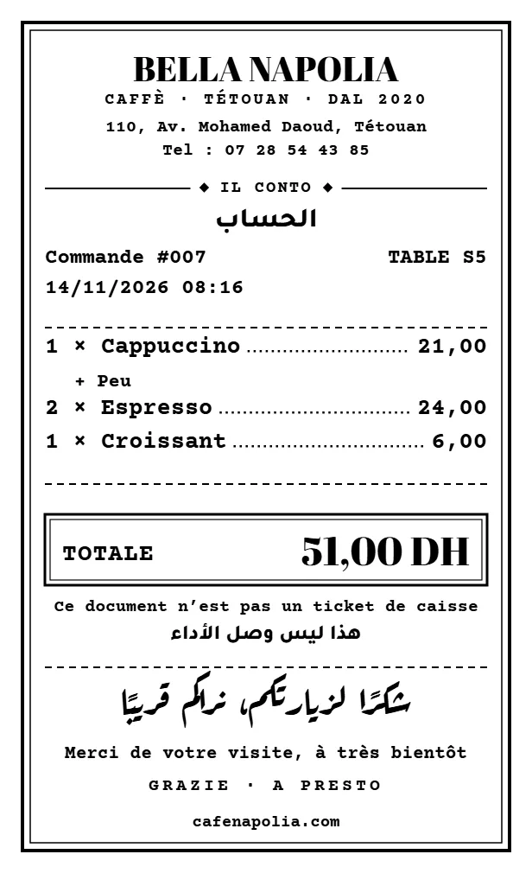
«نقل أو ضمّ»
- إلى طاولة فارغة: ينتقل الطلب كله، ومعه جولاته وطلب الحساب.
- إلى طاولة مشغولة: يسأل ضمّ هذا الطلب إلى طلب طاولة S4؟ يصبحان حسابًا واحدًا وتتحرّر هذه الطاولة. اضغط ضمّ في حساب واحد.
الحجز
في القائمة، زر حجز على طاولة فارغة يجعلها محجوزة. حين يصل أصحابها المس الطاولة وافتح طلبهم. وإلغاء الحجز يعيدها فارغة.
زبون دفع وجلس: «مدفوعة»
- زبون دفع في الكونتوار واختار طاولة في أين يجلس؟، أو طاولة دُفعت ومشروباتها لم تصل: تصير مدفوعة وينتظر طلبه · منذ 4 د. تُطبع ورقة البار PAYEE و«طاولة 5 · مدفوعة»، ويرنّ هاتف النادل حين يجهز الطلب.
- حين يُقدَّم الطلب: مدفوعة · سُلِّم.
- حين يغادر الزبون اضغط غادر: الطاولة S5 فارغة الآن، مع تراجع لخمس ثوانٍ.
- والبار مطفأ: حين تجهز مشروباته، اضغط جاهز ✓ على بطاقة الطاولة.
لمسة على جسم بطاقة طاولة «مدفوعة» تفتح طلبًا جديدًا لها. استعمل أزرارها: جاهز ✓ وغادر.
كتاب من الرف
- في نافذة الطاولة: كتاب من الرف لهذه الطاولة، ثم المس الكتاب. تظهر 📖 «…» على الطاولة S5، ويخرج الكتاب من الرف في الموقع أيضًا.
- عند الدفع ترى على هذه الطلبية كتاب من المكتبة…. حين يعيده الزبون اضغط عاد إلى الرف.
الدفع
تفتح نافذة الدفع بالزر الأحمر دفع وعليه المجموع، أو الدفع الآن في نافذة طاولة، أو ادفع W12 على طلب من الموقع. الدفع في الكاشير فقط، لا في هاتف النادل ولا في شاشة البار.
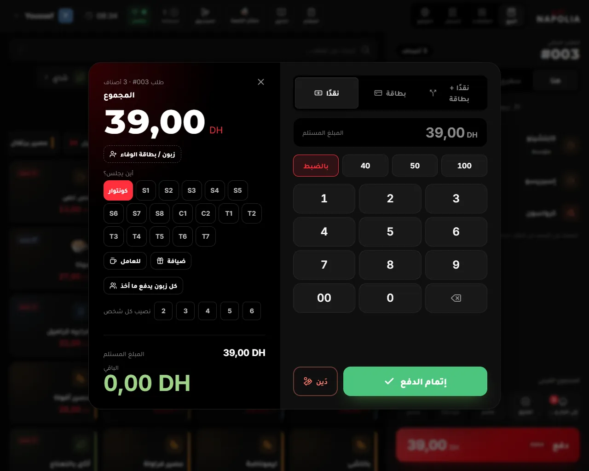
الدفع نقدًا، خطوة بخطوة
- اضغط دفع. في طلب الكونتوار تُسأل أولًا هنا أم سفري؟ إن لم تختر.
- نقدًا مختار. المبلغ المستلم يبدأ بالمبلغ نفسه، وبالضبط مضيء.
- أعطاك الزبون ورقة أكبر؟ المس المبلغ الجاهز (مثل 50 أو 100)، أو اكتبه. المبالغ بالدرهم الكامل.
- اقرأ الباقي بالأخضر الكبير، وأعطه للزبون.
- اضغط إتمام الدفع.
- المبلغ المستلم أقل من المجموع: الزر لا يعمل حتى تصحّح المبلغ.
- المبلغ المستلم أكبر بكثير من الحساب: تأكد منه قبل الدفع: أكثر من 200 درهم فوق الحساب. تأكد أنك لم تخطئ.
بالبطاقة، أو نقدًا وبالبطاقة
- بطاقة: الكاشير يسجّل فقط. اكتب المبلغ على جهاز البطاقة بنفسك، ولا تضغط «إتمام الدفع» قبل أن يقبل الجهاز البطاقة.
- نقدًا + بطاقة: اكتب الجزء النقدي، والباقي يصير الجزء بالبطاقة.
في يسار النافذة
- زبون / بطاقة الوفاء: أضف الزبون هنا إن نسيته، وفيه زرّا المشروب المجاني وهدية عيد الميلاد (فصل بطاقة الوفاء).
- أين يجلس؟: في طلب «هنا» من الكونتوار. كونتوار مختار. إن جلس الزبون إلى طاولة المسها: تصير الطاولة «مدفوعة»، ويحمل النادل الطلب إليها حين يجهز.
- للعامل وضيافة: فصل الخصم، للعامل، ضيافة، دَين.
- كل زبون يدفع ما أخذ: لأصدقاء يدفع كل واحد ما شربه. اختر بـ − و+ ما يدفعه الأول، واقبض، ثم رجوع إلى الطلب للثاني. متبقٍّ للآخرين يقول كم بقي. والحساب كله يلغي التقسيم.
- نصيب كل شخص 2 إلى 6: يعرض نصيب كل واحد فقط، ويُدفع الحساب كله مرة واحدة.
- كتاب من المكتبة على الطلب: على هذه الطلبية كتاب من المكتبة…. اضغط عاد إلى الرف حين يعيده الزبون.
رسائل قبل إتمام الدفع
- الخصم صار أكبر من الحد الذي وافق عليه المسؤول: أعد تطبيقه (زر الخصم) ليوافق عليه.: حذفت أصنافًا بعد الخصم. أغلق النافذة، واضغط خصم من جديد.
- بطاقة هذا الزبون لم تعد ممتلئة (استُعملت في مكان آخر): حُذف المشروب المجاني من الطلب.: راجع المجموع الجديد مع الزبون.
بعد الدفع
تظهر تم الدفع، ورقم الطلب، والمجموع، والباقي بالأخضر. وفيها:
- أرسل على واتساب: لزبون له بطاقة (فصل بطاقة الوفاء).
- طباعة الإيصال: إن لم يخرج الوصل وحده، أو أراد الزبون وصلًا.
- طلب جديد (أو Enter). وتعود الشاشة وحدها إلى طلب جديد بعد 3 ثوانٍ (6 ثوانٍ مع باقٍ)، إلا وفيها رسالة أو زر واتساب.
- مربع أحمر: لم يصل الطلب إلى البار: … مع أعد الإرسال. أصلح السبب واضغط، أو أخبر البار بصوتك.
- مربع برتقالي: هذه الأصناف لم تذهب إلى البار بعد مع إلى البار: اضغطه ليصل الطلب.
ما يحدث مع الدفع
- الدرج يُفتح وحده للدفع نقدًا ولـ«Glovo نقدًا»، في كاشير الحاسوب الموصول بالطابعة.
- ورقة البار والمطبخ تُطبع لما لم يُرسل بعد. والبار مشغّل: يصل الطلب إلى شاشته.
- وصل الزبون يُطبع وحده إن كانت الطباعة التلقائية مشغّلة في هذا الكاشير. إن لم يخرج: طباعة الإيصال.
- البيع يُحفظ في الكاشير أولًا، ثم يُرسل. وبلا إنترنت يبقى رقم المبيعات غير المرسلة على السحابة في أعلى الشاشة حتى يعود الاتصال.
| طريقة الدفع | في الصندوق |
|---|---|
| نقدًا، Glovo نقدًا | يدخل المبلغ |
| بطاقة | لا شيء (يُحسب على جهاز البطاقة) |
| Glovo أونلاين | لا شيء |
| للعامل، ضيافة | لا شيء |
| دَين ينتظره المقهى | لا شيء |
| دَين يؤدّيه موظف «نقدًا الآن» | يدخل المبلغ |
وصل الزبون: «وصل التيسيرا»
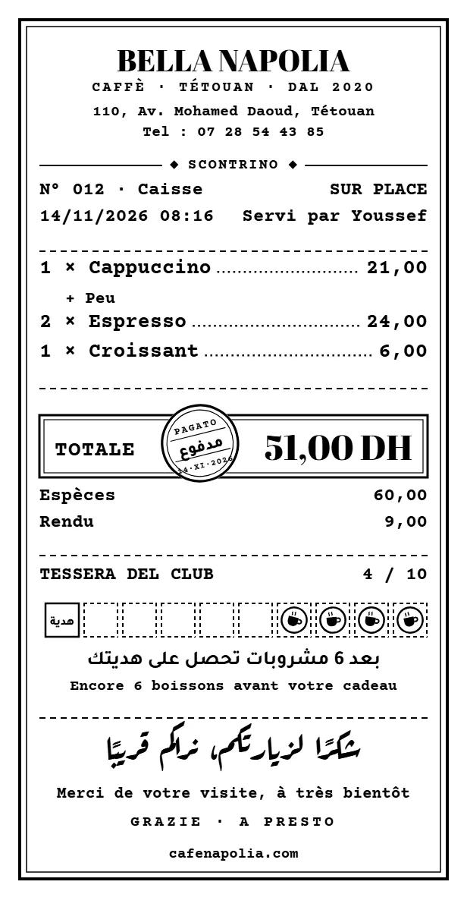
- في أعلاه العنوان والهاتف، ثم SCONTRINO، ورقم الطلب والكاشير، والنوع (SUR PLACE، A EMPORTER، TABLE، GLOVO)، والتاريخ، وServi par واسم من خدم.
- المشروب المجاني: Boisson offerte (fidélité). الخصم: Remise. مشروب العامل: Prix employé. الضيافة: Offert par la direction.
- طريقة الدفع: Espèces (نقدًا)، Carte bancaire، Glovo espèces، Glovo en ligne، Dette (non payée)، وRendu للباقي.
- لزبون النادي: TESSERA DEL CLUB 4 / 10 بخانة لكل مشروب، و«بعد 6 مشروبات تحصل على هديتك».
- في الأسفل رمز QR: لزبون النادي بطاقته وأختامه، ولغيره تقييم الخدمة باسم من خدمه. لا رمز في وصل الدين، وللعامل، والضيافة.
إعادة طباعة الوصل
- قائمتك ← إعادة طباعة آخر إيصال: آخر طلب دُفع في هذا الكاشير، ثم طباعة الإيصال.
- أو السجل ← الطلب ← طباعة الإيصال.
- النسخة مكتوب عليها *** DUPLICATA ***، بلا رمز QR، وتُسجَّل في سجل المراقبة. لا تحتاج صلاحية.
بطاقة الوفاء
نادي نابوليا: كل زبون يُعرف برقم هاتفه. يجمع ختمًا لكل مشروب، وبعد 10 أختام يأخذ مشروبًا مجانيًا. اسأل كل زبون عن رقمه في كل طلب: هكذا يجمع أختامه، ويعرفه الفريق في زيارته القادمة.
إضافة الزبون إلى الطلب
- اضغط زبون / بطاقة الوفاء (فوق أصناف الطلب، أو في نافذة الدفع).
- في رقم هاتف الزبون الرقم يبدأ بـ 06. غيّره بـ 07… أو 05…، أو أجنبي 00… لرقم من خارج المغرب. الرقم المغربي 10 أرقام.
- يظهر جاري البحث…، ثم أحد هذه:
- الاسم، و12 زيارة، والأختام 7/10، وباقي 3 للمشروب المجاني أو مشروب مجاني متاح؛
- زبون جديد: سيُنشأ ملفه مع هذا الطلب؛
- بدون اتصال: تُحسب النقاط عند عودة الاتصال.
- اكتب الاسم (اختياري) إن لم يكن له اسم، وعيد ميلاده إن أراد (أسفله).
- اضغط ربط بالطلب (أو Enter). وإزالة الزبون يزيله من الطلب.
الكاشير لا يمسح بطاقة الزبون ولا رمزها: اسأله عن رقم هاتفه. وطلب الموقع يأتي برقمه وحده.
ما يظهر بعد الإضافة
- سطر الزبون: الاسم، والمستوى 🥇 ذهبي أو 🥈 فضي، والزيارة 12، والأختام.
- لحظات تقولها للزبون: عيد ميلاده اليوم 🎂 هنّئه!، أول زيارة بالبطاقة ✨ عرّفه بها، هذه الزيارة 25 🎉 هنّئه!، لم يأتِ منذ 40 يومًا 👋 رحّب به.
- زرّا الهدية بالأخضر حين تكون متاحة: استعمال المشروب المجاني وهدية عيد الميلاد: مشروب مجاني.
- على الشاشة القصيرة كل هذا في سطر واحد. المسه لتفتح التفاصيل.
«ذوق الزبون»
من آخر 20 زيارة للزبون، يعرض الكاشير ما يحبه:
- ملاحظة عن الزبون بالبرتقالي: كتبها المالك، مثل حساسية. اقرأها دائمًا.
- مشروبه المفضل باختياراته، وكم مرة أخذه، مع أضف.
- ومعه عادةً: ما يأخذه معه، بلمسة واحدة لكل صنف.
- ذوقه: سكره، وإضافاته، وملاحظاته المتكررة. وطبّقه على الطلب يضع سكره على المشروبات التي أضفتها قبل البطاقة.
- آخر طلب مع كرّر.
- وحين تضيف مشروبًا جديدًا يختار الكاشير سكره المعتاد وحده.
اسأله مع ذلك: «كالعادة؟». الذوق يساعدك، والزبون يقرر.
الأختام
- ختم لكل صنف في الطلب (كل كوب ختم). إلا البن بالوزن، والأقسام التي استثناها المالك (المشروبات الغازية والماء والبن).
- ختم إضافي مرة في الأسبوع حين يقيّم الزبون زيارته من بطاقته.
- لا أختام على المشروب المجاني نفسه، ولا على الدَّين، ولا على «للعامل» و«ضيافة»، ولا على بطاقة موقوفة.
- في «كل زبون يدفع ما أخذ» تُحسب الأختام مع آخر دفعة.
المشروب المجاني
- بطاقة الزبون ممتلئة (10 أختام)؟ يظهر استعمال المشروب المجاني. اضغطه إن أراده الزبون الآن.
- يظهر في الطلب مشروب مجاني (الوفاء) بالأخضر، والمبلغ المطروح.
- اقبض الباقي كالعادة.
يُطرح أغلى صنف في الطلب، باختياراته، حتى 20 درهمًا. وما فوق ذلك يدفعه الزبون. مثال: ميلك شيك بـ 32 درهمًا مع المشروب المجاني ← يدفع الزبون 12 درهمًا.
- مشروب مجاني واحد في الطلب. ويُطرح قبل أي خصم.
- بعده تنقص البطاقة 10 أختام، والأختام الزائدة تبقى.
- في الوصل: Boisson offerte (fidélité).
- لا مع «دَين»، ولا مع «كل زبون يدفع ما أخذ».
هدية عيد الميلاد
- مشروب مجاني، بالحد نفسه (20 درهمًا)، من يوم عيد ميلاده إلى 7 أيام بعده، مرة في السنة. لا تنقص بها الأختام.
- لا هدية إن حُفظ عيد الميلاد منذ أقل من 30 يومًا: عيد ميلاد حُفظ منذ أقل من 30 يومًا: لا هدية هذه المرة.
- كتابة عيد الميلاد: في نافذة الزبون، عيد الميلاد (اختياري): اليوم والشهر، بلا سنة. مرة واحدة فقط، ولا يُغيَّر بعدها إلا من لوحة التحكم. يُحفظ مع الطلب المدفوع.
بطاقات خاصة
- بطاقة الوفاء موقوفة لهذا الزبون: أوقفها المالك. لا أختام ولا هدية.
- الدفع قبل التقديم والبطاقة متوقفة حتى يُسدَّد الدين: على الزبون دين بسوء نية. خذ المبلغ قبل أن يُقدَّم له الطلب. تعود البطاقة حين يسدّد دينه.
- شريط أحمر على الزبون دين: … مع تسديد الآن: دين بحسن نية. البطاقة تعمل. اقترح عليه التسديد (فصل الصندوق).
«أرسل على واتساب»
بعد الدفع، وفي «السجل»، يظهر لزبون له بطاقة أرسل على واتساب: يفتح واتساب على رقمه برسالة جاهزة فيها أختامه ورابط بطاقته. اضغط أنت «إرسال» في واتساب. لا يُرسل شيء وحده.
الخصم، للعامل، ضيافة، دَين
أربع طرق لطلب لا يُدفع كاملًا. كلها تُسجَّل باسمك وسببها، ويراها المالك.
الخصم، خطوة بخطوة
- اضغط خصم. تُفتح تطبيق خصم.
- اختر نسبة % أو مبلغ DH، واكتب الرقم، أو المس نسبة جاهزة (5، 10، 15، 20، 50). النقطة البرتقالية على نسبة تعني أنها تحتاج موافقة.
- اختر سبب الخصم: زبون دائم، تعويض عن تأخير أو خطأ، عائلة أو صديق، أو سبب آخر واكتبه. السبب إجباري.
- اضغط تأكيد. وإن احتاج موافقة، تفتح نافذة الموافقة.
- من له صلاحية الخصم يخصم حتى النسبة التي حددها المالك. فوقها يلزم رمز المالك أو المدير: هذا الخصم يحتاج موافقة المدير.
- إزالة الخصم يحذفه.
- حذفت أصنافًا بعد خصم بمبلغ؟ قد يصير الخصم نسبة أكبر مما وُوفق عليه، فيطلب الكاشير إعادته: اضغط خصم من جديد.
- في الوصل: Remise، بلا سبب.
«للعامل»: مشروبك أنت
مشروبك تأخذه بثمن العامل، ويُخصم من أجرك، لا من الصندوق.
- أضف مشروبك، ثم دفع ← للعامل.
- العامل يكتب رمزه: الذي يشرب يكتب رمزه هو.
- تظهر ثمن الزبون مشطوبًا، ومجاني، وثمن العامل، ويُخصم من أجر … لا من الصندوق.، والمجاني الباقي له في هذه الوردية.
- اضغط تأكيد: مشروب …: … من أجره.
- ثمن العامل نصف ثمن الزبون، إلا إن حدد المالك غيره. وبعض المشروبات مجانية كل يوم (يحددها المالك).
- لا نقود، ولا أختام. ويظهر في «محفظتي»: مشروباتك بثمن العامل.
- المالك لا يشتري بثمن العامل.
«ضيافة»: ضيف المالك
- أضف ما يشربه الضيف، ثم دفع ← ضيافة.
- مشروب مجاني لضيف، بموافقة المالك وحده.: يكتب المالك رمزه، أو اضغط اطلب موافقة المالك فيصله الطلب على هاتفه.
- انتظر ينتظر جواب المالك… ولا تُغلق النافذة. أمامه 10 دقائق.
- وافق؟ ضيافة بموافقة …. أو رفض المالك الضيافة.، أو لم يُجب المالك خلال 10 دقائق: لا ضيافة.
المدير لا يوافق على الضيافة. وبلا إنترنت لا ضيافة.
«دَين»: الزبون لم يدفع
- دفع ← دَين (بجانب «إتمام الدفع»). تُفتح دَين: الزبون لم يدفع.
- نوع الدين: حسن نية (نسي، أو وعد أن يدفع) أو سوء نية (هرب، أو رفض أن يدفع).
- رقم هاتف الزبون: إجباري في «حسن نية». يتحقق الكاشير من ديونه: إن كان عليه دين لم يُسدَّد، لا يُقبل دين ثانٍ.
- من يتحمّله الآن؟:
- يؤدّيه موظف: الكاشير أو النادل، برمزه هو، فيصير الدين له. يدفع نقدًا الآن أو سلفة على الأجر.
- المقهى ينتظر: لا مال يدخل الصندوق. يحتاج رمز المالك أو المدير، أو موافقة المالك على هاتفه.
- اضغط سجّل الدين. تظهر سُجّل دَينًا. يصل الطلب إلى البار كالعادة.
- لا دين مع المشروب المجاني: ألغِه أولًا.
- بلا إنترنت يُسجَّل «دين بانتظار التحقق»، برقم الزبون وموافقة المدير.
- دين بسوء نية يوقف بطاقة الزبون حتى يسدّده.
- التسديد لاحقًا: الصندوق ← الديون ← تسديد (فصل الصندوق والمصاريف).
تغيير طلب وإرجاعه
ما لم يصل إلى البار يُعدَّل بحرية. وما وصل لا يُحذف بصمت: يسألك الكاشير أولًا «هل حُضّر؟»، فيُشطب في البار إن لم يُحضَّر، أو يُسجَّل خسارة إن حُضّر.
نافذة «هل حُضّر؟»
تسأل: هل حضّر البار «لاتيه»؟
- لم يُحضَّر بعد: يُلغى في البار. والبار مشغّل: يُشطب على شاشة البار. والبار مطفأ: تُطبع ورقة «أُلغي» للبار.
- حُضّر، ورُمي: يُسجَّل خسارة: يُخصم من المخزون والبن. ثم لماذا رُمي؟: لم يعجب الزبون، خطأ في التحضير، سقط أو انسكب، أو سبب آخر واكتبه.
- إغلاق النافذة يلغي ما كنت تفعله.
أجب بصدق: هكذا يُشطب في البار ما لم يُحضَّر، ويُحسب المرمي كما هو.
متى تظهر؟ حين تُنقص أو تحذف صنفًا وصل إلى البار، أو تضغط تبديل، أو تغيّر اختياراته، أو مسح طلبًا أُرسل منه شيء، أو تلغي طلب موقع أخذه البار، أو تستردّ أو تبدّل بعد الدفع. ولا تظهر لصنف لم يُرسل.
الصلاحية
- حذف أو إنقاص صنف أُرسل، ومسح طلب أُرسل منه شيء: صلاحية «حذف صنف أُرسل للبار أو المطبخ».
- تبديل أو تغيير اختيار: الصلاحية فقط إن نقص الحساب.
- تغيير الملاحظة أو «سفري»: لا صلاحية.
- إن لم تكن لك الصلاحية: نافذة الموافقة (فصل الدخول والحضور). وإن رُفضت يبقى الطلب كما كان.
«تبديل» قبل الدفع
الزبون يريد مشروبًا آخر مكان مشروب أُرسل:
- اضغط تبديل بجانب المشروب.
- أجب «هل حُضّر؟».
- يظهر الشريط الأزرق اختر المشروب الجديد مكان «لاتيه». المس المشروب الجديد. (وإلغاء التبديل يلغي.)
- يظهر الجديد وتحته بدل لاتيه. اضغط إلى البار أو ادفع.
في البار يأتي أولًا: أولوية · الزبون ينتظر، وتبديل · كان: لاتيه. وإن لم يعجبه البديل أيضًا، يبقى البديل الأول في الحساب.
تغيير الاختيارات (الحجم، الحليب…) في صنف أُرسل يصير تبديلًا أيضًا. وتغيير الملاحظة أو «سفري» فقط يُرسل الصنف من جديد بعلامة MODIFIE، و«تغيّر» على شاشة البار.
«السجل»
تبويب السجل: طلبات هذا الكاشير، اليوم أو أمس (اليوم يبدأ الساعة 05:00).
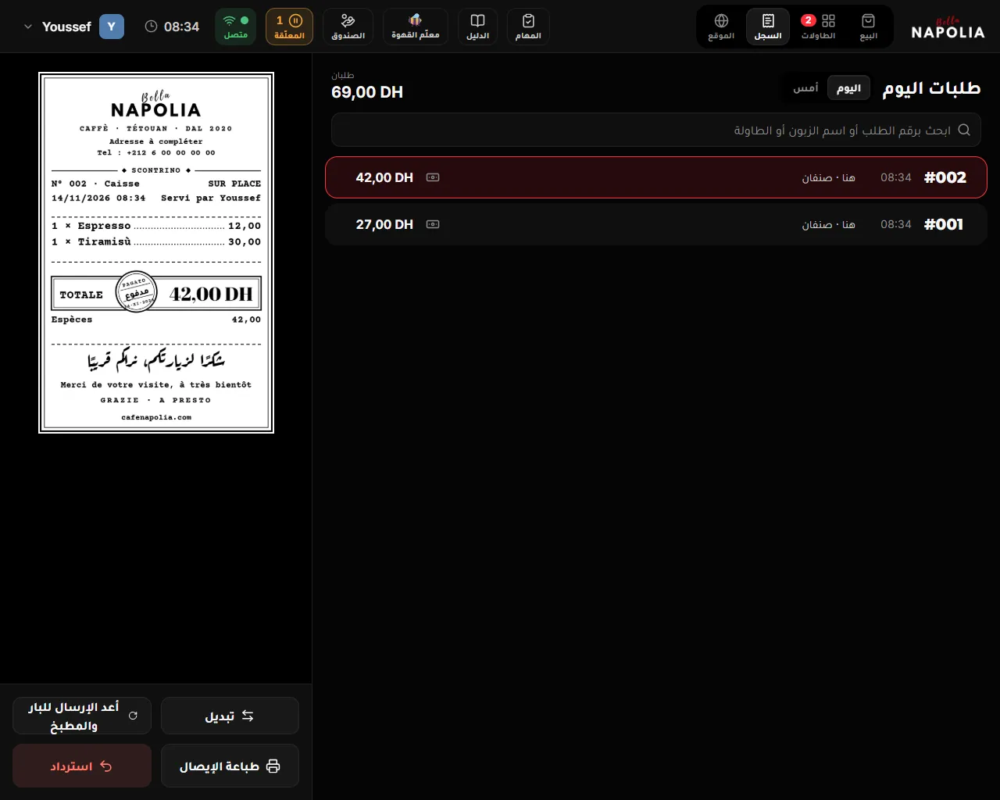
- في الأعلى عدد الطلبات والمبلغ المقبوض، ومنها مسترد بالأحمر إن كان.
- ابحث برقم الطلب أو اسم الزبون أو الطاولة، أو برقم الهاتف أو رقم Glovo. و12 و012 و#12 كلها تجد الطلب نفسه.
- اختر طلبًا، فترى وصله، والأزرار: أرسل على واتساب، تبديل، أعد الإرسال للبار والمطبخ، طباعة الإيصال، استرداد.
- علامات الطلبات في فصل حالات الطلب.
«استرداد»: إرجاع ثمن بعد الدفع
- السجل ← اختر الطلب ← استرداد.
- لإرجاع جزء: ما يُرجعه الزبون (اضغط − لما يبقى له)، بـ − و+ لكل صنف.
- اضغط تأكيد، ثم أجب «هل حُضّر؟».
- لم يُحضَّر: اختر لماذا يُعاد المبلغ؟: غيّر الزبون رأيه، انتظر طويلًا، خطأ في الطلب، أو سبب آخر. حُضّر: اختر لماذا رُمي.
- صلاحية الاسترداد، أو نافذة الموافقة.
- تظهر مُسترد · …. يُطبع وصل REMBOURSEMENT ويوقّع عليه الزبون، ويُفتح الدرج إن أُرجع نقدًا.
- يخرج المال من صندوق الوردية الحالية، ولو كان البيع أمس.
- تُنزع أختام ذلك البيع من بطاقة الزبون. وإن كان فيه مشروب مجاني، يعود إلى بطاقته.
- طلب فيه مشروب مجاني، وطلب Glovo: يُسترد كاملًا فقط. والدين لا يُسترد: هذا الطلب دَين: لا يُسترجع.
«تبديل» بعد الدفع
- السجل ← الطلب ← تبديل ← أي مشروب يُبدَّل؟: اختر المشروب.
- أجب «هل حُضّر؟».
- الطلب الذي على الشاشة يُعلَّق، ويظهر اختر المشروب الجديد مكان «…» (#12). المس الجديد.
- يُدفع الفرق فقط. لا فرق: لا شيء للدفع في هذا التبديل وأكّد التبديل.
- البديل أرخص، والأول لم يُحضَّر أو حُضّر خطأ أو سقط: أرجِع للزبون … نقدًا؟. أرجِع نقدًا (يحتاج صلاحية المصاريف) يفتح الدرج ويسجّل المبلغ، أو لا.
«أعد الإرسال للبار والمطبخ»
ورقة ضاعت أو لم يرها البار؟ في «السجل» ← الطلب ← أعد الإرسال للبار والمطبخ. تخرج الورقة وعليها RENVOI و«إعادة إرسال · لا يُحضَّر مرتين».
المرمي
كل مشروب رُمي يُسجَّل من «هل حُضّر؟» ← حُضّر، ورُمي وسببه. لا مال يتحرك. يظهر في «ملخص الصندوق» وفي الإغلاق: مشروبات رُميت، ويراه المالك.
الصندوق والمصاريف
زر الصندوق في أعلى الشاشة يجمع كل ما يخص النقود في الوردية. القاعدة: لا يدخل درهم ولا يخرج من الصندوق إلا مسجّلًا.
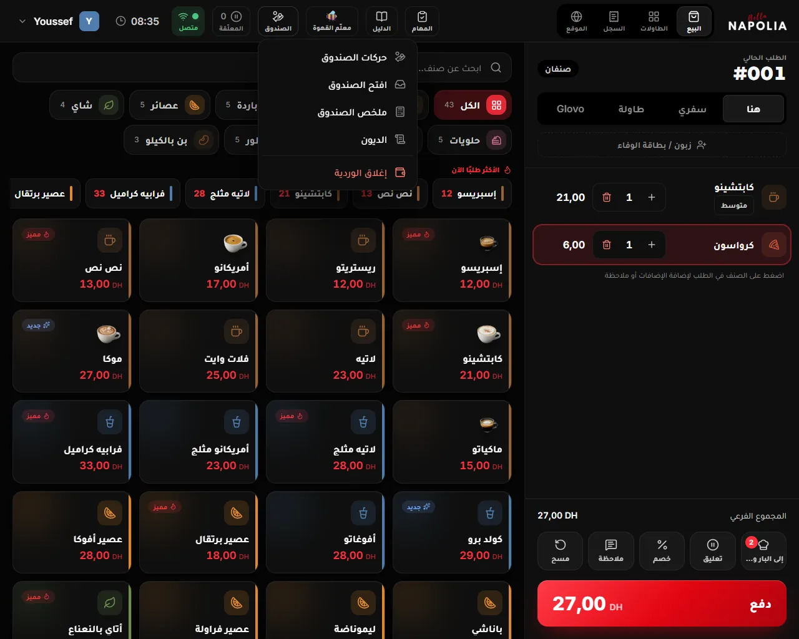
في القائمة، بالترتيب:
- حركات الصندوق: كل نقود تدخل أو تخرج دون بيع.
- افتح الصندوق: فتح الدرج دون بيع.
- ملخص الصندوق: ما يجب أن يكون في الصندوق الآن.
- الديون: ديون الزبناء المفتوحة وتسديدها.
- كيس بن إلى البار وضبط الطاحونة: تظهر فقط حين يضيف المالك المطاحن (فصل البن والمطاحن).
- إغلاق الوردية: في الأسفل، بالأحمر (فصل إغلاق الوردية).
«حركات الصندوق»: الأنواع الخمسة
| النوع | متى تستعمله | أسباب جاهزة | موافقة؟ |
|---|---|---|---|
| مصروف | مصاريف المقهى المدفوعة من الصندوق | غاز، كهرباء، ماء، نظافة، إصلاح، نقل | نعم |
| مشتريات | سلعة تدخل المخزون: حليب، خبز، فواكه… (نافذة خاصة، أسفله) | — | نعم |
| تسبيق | مبلغ يُعطى لموظف من أجره | اختر الموظف | نعم |
| إدخال نقود | نقود تضعها في الصندوق | فكة (صرف)، إضافة من المالك | لا |
| سحب نقود | نقود تخرج لغير مصروف | إيداع في البنك، تسليم للمالك | نعم |
«موافقة؟ نعم» تعني صلاحية «المصاريف وإخراج المال من الصندوق». إن لم تكن لك، تفتح نافذة الموافقة (فصل الدخول والحضور).
تسجيل حركة، خطوة بخطوة
- الصندوق ← حركات الصندوق.
- اختر النوع: مصروف أو تسبيق أو إدخال نقود أو سحب نقود. (مشتريات تفتح نافذتها الخاصة.)
- اكتب السبب في السبب / البيان، أو المس سببًا جاهزًا. السبب إجباري. وفي تسبيق اختر الموظف من الموظف المستفيد.
- اكتب المبلغ بالدرهم. المبلغ بالدرهم الكامل، بلا سنتيمات.
- ضع علامة على طباعة وصل للتوقيع إن أردت وصلًا يوقّع عليه من أخذ المال. في تسبيق يُطبع الوصل دائمًا ويوقّعه الموظف.
- اضغط تسجيل · مصروف (يتغيّر الاسم حسب النوع). إن احتاجت موافقة، يُضاف اسم الموافق بعد السبب، هكذا: (✓ الاسم).
- تظهر تم تسجيل الحركة. ويُفتح الدرج وحده في الكاشير الموصول بالطابعة، لكل نوع حتى «إدخال نقود».
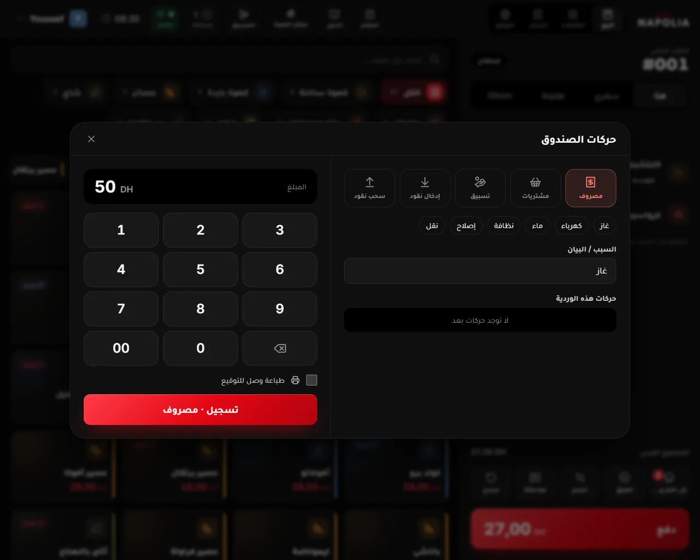
تحت النافذة حركات هذه الوردية: كل حركة بوقتها وسببها ومبلغها، والصافي في الأعلى. وتظهر فيها أيضًا حركات سُجّلت من أماكن أخرى:
- فرق تبديل #012: نقود أُرجعت لزبون بعد تبديل بمشروب أرخص.
- شراء: … وإصلاح: …: من المهام، حين دُفعت من الصندوق.
- تسديد دين: زبون سدّد دينه.
- دين زبون · طلب #012: دين حمله موظف على أجره.
لا يُحذف شيء ولا يُعدَّل من الكاشير، ولا يُعاد طبع الوصل. أخبر المالك أو المدير فورًا: يصحّحها من لوحة التحكم، فيصل التصحيح إلى الكاشير عند الإغلاق.
«مشتريات من الصندوق»
لكل سلعة تشتريها بنقود الصندوق وتدخل المخزون. السلعة تُضاف إلى المخزون، والمبلغ يُخصم من الصندوق.
مع فاتورة
- الصندوق ← حركات الصندوق ← مشتريات.
- اضغط 📷 صوّر الفاتورة. على حاسوب المقهى تُفتح نافذة لاختيار ملف: اختر صورة الفاتورة.
- انتظر نقرأ الفاتورة… نصف دقيقة تقريبًا. ثم تظهر الأصناف والمورّد ورقم الفاتورة.
- راجع الكميات (كغ، لتر، قطعة). السطر البرتقالي المكتوب عليه تحقّق لم يتأكد منه القارئ: أكمل كميته، أو اضغط ليس في المخزون إن لم تكن سلعة مخزون.
- راجع المبلغ المدفوع من الصندوق (DH)، وهو مملوء بمجموع الفاتورة.
- اضغط سجّل وادفع من الصندوق.
بلا فاتورة
- في ماذا اشتريت؟ المس السلعة، ثم اكتب كم وصل؟ بوحدتها. الفاصلة مقبولة، مثل 1,5.
- أو اضغط شيء خارج المخزون واكتب ما هو (أكياس، مواد تنظيف…).
- اكتب المبلغ، ثم ملاحظة (اختياري)، ثم سجّل وادفع من الصندوق.
- يحتاج صلاحية المصاريف، والإنترنت. بلا إنترنت تظهر تعذّر الاتصال. حاول مرة أخرى. ولا يُسجَّل شيء.
- بعدها تظهر سُجّل الشراء ودُفع من الصندوق.
- يُفتح الدرج وحده لتأخذ المبلغ، في كاشير الحاسوب الموصول بالطابعة. ولا يُطبع وصل.
لم تنجح القراءة. صوّر الفاتورة من جديد، أقرب وفي ضوء أفضل. أو لا تظهر فاتورة في هذه الصورة. أعد التصوير. وإن ظهرت قراءة الفواتير متوقفة الآن أو وصلنا إلى 30 فاتورة اليوم، سجّل المشتريات باليد (بلا فاتورة).
«توصيلة تنتظر الدفع»
حين يستلم النادل بضاعة على هاتفه ويختار من صندوق الكاشير، يظهر في أعلى الكاشير شريط برتقالي: توصيلة تنتظر الدفع: المورّد · المبلغ، مع صوت قصير.
- اضغط ادفع للمورّد. ترى المورّد، واستلمها مع اسم من استلم، وأصناف الفاتورة.
- راجع المبلغ من الصندوق (DH)، وعدّله إن دفعت غيره.
- اضغط ادفع من الصندوق (يحتاج صلاحية المصاريف). يُفتح الدرج، وتظهر دُفعت من الصندوق وسُجّلت. وتدخل السلع المخزون.
لم تدفعها؟ اضغط لم يُدفع من الصندوق، واكتب السبب في لماذا؟ يراه النادل.، ثم أرسل. تعود التوصيلة إلى النادل، ولا يتحرك أي مال.
«تسبيق» لموظف
بعد التسجيل يوقّع الموظف وصل AVANCE SUR SALAIRE. ويظهر المبلغ في «محفظتي» عنده: تسبيق من الصندوق، ويُخصم من أجره في آخر الشهر.
«افتح الصندوق»
لفتح الدرج دون بيع، مثلًا لصرف فكة لزبون. يعمل فقط في كاشير المقهى على الحاسوب الموصول بالطابعة، ويحتاج صلاحية «فتح الصندوق يدويًا». كل فتح يُسجَّل في سجل المراقبة باسمك، وقد يصل تنبيه إلى المالك.
- الصندوق يُفتح من تطبيق الكاشير على الحاسوب، المربوط بالطابعة.: أنت في كاشير المتصفح، أو لا طابعة مضبوطة.
- الطابعة مطفأة: الصندوق يُفتح عن طريقها. شغّلها ثم افتحه من جديد.
«ملخص الصندوق»
يحتاج صلاحية «ملخص الصندوق قبل الإغلاق». يعرض الوردية حتى الآن، دون إغلاقها:
- المداخيل حسب القناة: هنا، سفري، طاولات النادل، الموقع، Glovo، نقدًا وبالبطاقة.
- خرج من الصندوق: مصروف، مشتريات، تسبيق، سحب نقود، الاستردادات نقدًا.
- دخل الصندوق: مبلغ بداية الصندوق، إدخال نقود، تسديد ديون.
- للعلم: الخصم، المشروبات المجانية، الاستردادات، الطلبات المفتوحة.
- وفي الأسفل: المفروض في الصندوق الآن نقدًا والمفروض في جهاز البطاقة.
يتجدد كل 15 ثانية. وطباعة الملخص يطبعه.
«الديون»: تسديد دين زبون
الصندوق ← الديون. تحتاج الإنترنت. لكل دين: اسم الزبون أو زبون لا نعرف رقمه، وحسن نية أو سوء نية، ورقم الطلب، والمبلغ، ومن يحمله: لـ اسم الموظف أو المقهى ينتظره.
- جاء الزبون يدفع؟ اضغط تسديد.
- تسألك النافذة يدفع الزبون … نقدًا الآن؟. الدين يُسدَّد كاملًا، لا جزءًا منه.
- أكّد. يدخل المبلغ صندوق هذه الوردية، ويُفتح الدرج، ويُطبع للزبون وصل REGLEMENT DE DETTE. تظهر سُدِّد الدين.
دين يحمله موظف ودفعه الزبون له مباشرة: اضغط سُدِّد لي، فيكتب صاحب الدين رمزه. يُغلق الدين ولا يدخل الصندوق شيء.
كيف يُسجَّل الدين أصلًا؟ انظر «دَين» في فصل الخصم، للعامل، ضيافة، دَين.
إغلاق الوردية
في آخر الوردية تعدّ النقود بنفسك أولًا، ثم يعرض الكاشير المبلغ المتوقع والفرق. يُطبع تقرير الإغلاق (Z) ويصل ملخصه إلى المالك. يحتاج صلاحية «إغلاق الوردية»، ويغلقها أي موظف له هذه الصلاحية، لا من فتحها فقط.
قبل أن تبدأ
- اقبض ثمن كل الطلبات: الكاشير لا يُغلق وفيه طلب مفتوح. «مفتوح» يعني: الطلب الذي على الشاشة، وكل طلب في «المعلّقة»، وكل طاولة لم تُدفع، وطلبات الموقع المقبولة ولو كانت لوقت لاحق.
- طلبات الموقع التي لم تُقبل بعد، وتذاكر البار، لا تمنع الإغلاق. والطلبات المدفوعة التي لم تُقدَّم بعد لا تمنعه أيضًا.
الإغلاق، خطوة بخطوة
- الصندوق ← إغلاق الوردية. تُفتح نافذة إغلاق الوردية · تقرير الإغلاق (Z). مع الإنترنت يرسل الكاشير أولًا ما لم يُرسل، ويأخذ تصحيحات المالك.
- عُدّ النقود. في عدّ النقود حسب الأوراق والقطع المس كل ورقة (200، 100، 50، 20) وكل قطعة (10، 5، 2، 1، 0,50)، واكتب عددها. أو اكتب المجموع مباشرة في أو اكتب مجموع النقود مباشرة، بفاصلة للسنتيمات مثل 111,60. الطريقتان تمحو إحداهما الأخرى. ومسح العدّ يبدأ من جديد. صندوق فارغ؟ اكتب 0.
- إن كان في المقهى جهاز بطاقة، اكتب مجموعه في مجموع جهاز البطاقة (TPE).
- حين تكون مطاحن مضبوطة، زِن البن في جرد البن (فصل البن والمطاحن).
- اضغط تأكيد العدّ. قبل هذا لا يظهر المبلغ المتوقع: عُدّ أولًا.
- يظهر الحساب: النقود المتوقعة، والنقود المعدودة في الصندوق، والفرق: أخضر صفر، أزرق زيادة، أحمر نقص.
- فرق درهم واحد أو أكثر (نقدًا أو بالبطاقة)؟ اكتب سبب الفرق، ثلاثة أحرف على الأقل. بغير سبب لا يقبل الإغلاق.
- أخطأت في العدّ؟ عدّ من جديد. يبقى العدّ الأول مكتوبًا في التقرير: العدّ الأول ….
- راجع يُترك في الصندوق للوردية القادمة والمبلغ المسلَّم.
- اضغط طباعة التقرير وإغلاق الوردية.
بعد الإغلاق
- يُطبع تقرير Z بالفرنسية: سلّمه مع النقود. لم يخرج (الطابعة مطفأة، أو لا ورق)؟ أصلح الطابعة، ثم اطبع تقرير الإغلاق مرة أخرى في النافذة نفسها. أو لاحقًا: قائمتك ← إعادة طباعة آخر إيصال ← آخر تقرير إغلاق (Z).
- يخرج كل من في الكاشير، ويعود إلى شاشة الرمز السري.
- تظهر تم إغلاق الوردية: سلّم للمسؤول والمبلغ، ويبقى في الصندوق، والفرق إن وُجد.
- إن أغلقت من القائمة وأنت في عملك، تختار ما زلت أعمل أو نهاية العمل.
- يصل ملخص الوردية إلى المالك: المبيعات، وما خرج، والديون، والمتوقع والمعدود والفرق وسببه.
- المبلغ الذي سلّمته يبقى في «محفظتي» عندك (في عهدتي) حتى يسجّل المالك أنه استلمه، ثم تؤكد أنت في تأكيد تسليم العهدة.
رسالة حمراء: لا يُغلق الصندوق قبل قبض ثمن كل الطلبات. ما زال مفتوحًا: طلبان. تحتها قائمة الطلبات المفتوحة، وبجانب كل طلب افتح وادفع. اقبض ثمنها ثم عد إلى الإغلاق. والطلب المكتوب بالأحمر من يوم سابق نُسي من يوم آخر.
تنصرف وأنت من فتح الوردية
تضغط نهاية العمل (من قائمتك، أو من الحضور والانصراف في شاشة الرمز)، فيسألك الكاشير أولًا عن مهامك غير المنجزة: مرّر كل مهمة لزميل، أو اكتب لماذا لم تُنجزها. ثم يظهر ورديتك ما زالت مفتوحة:
- إغلاق الوردية ثم الانصراف: تغلق كما في الخطوات أعلاه، ثم تُسجَّل نهاية عملك وحدها.
- انصراف دون إغلاق (رمز المالك أو المدير): لزميل يكمل الوردية نفسها. يحتاج رمز المالك أو المدير، أو موافقة المالك على هاتفه. يُسجَّل في سجل المراقبة، ويغلق الزميل الوردية لاحقًا، فيُحسب الإغلاق والتسليم عليه.
حالات خاصة
- وردية من يوم سابق ما زالت مفتوحة: انظر فصل فتح الوردية.
- لم يعد هذا الجهاز الكاشير الرئيسي: اختار المالك جهازًا آخر. اضغط سلّم الطلبات للكاشير الرئيسي، ثم إغلاق الوردية لتسجيل مبلغ الصندوق.
- أُغلقت الوردية من لوحة التحكم: أغلقها المالك من بعيد. تُعرض المبالغ التي سجّلها.
المهام والأدوات
زر المهام في أعلى الشاشة: مهامك وقوائم اليوم. الرقم عليه ما ينتظرك، ويصير الزر أحمر حين تتأخر قائمة أو مهمة عاجلة.
«مهامي»
- على كل مهمة: عاجلة أو متأخرة، ومن أرسلها، ولمن (لأول كاشير يتكفّل بها، أو لكل من في الوردية)، وقبل 11:00.
- أتكفّل بها: تصير لك. إن سبقك زميل: تكفّل بها غيرك قبلك.
- تمت، مع ملاحظة (اختياري)، ثم أرسل. وإن طلب المالك صورة: 📷 صوّر أولًا.
- مرّرها لزميل مع السبب: تبقى عندك حتى يقبلها. وتعذّرت مع السبب: تعود إلى المالك.
- مهمة مرّرها لك زميل: أقبلها أو لا أستطيع.
- شراء: طلبتُ ثم وصل. إصلاح: اتصلتُ ثم جاء المصلّح ثم أُصلح. وفيها اتصال وواتساب.
- عند وصل أو أُصلح: إن دُفع من الصندوق، اختر من الصندوق (يحتاج صلاحية المصاريف). يُسجَّل في حركات الصندوق.
«القوائم»
قوائم الافتتاح والإغلاق واليوم، لكل واحدة وقتها ولمن هي. افتح القائمة، وضع علامة على كل بند تنجزه. البنود التي فيها رقم (حرارة الثلاجة مثلًا) تُكتب بالأرقام، وتصير حمراء خارج الحد إن خرجت عن حدّها. ثم تم، سجّل القائمة. تعمل بلا إنترنت.
«+ مهمة» و«بلّغ عن عطل»
- + مهمة: إصلاح أو شراء أو أخرى، ثم التفاصيل، ثم أضف المهمة. ضع عاجلة لما لا ينتظر.
- عطل؟ قائمتك ← بلّغ عن عطل: ما الذي تعطّل؟ (مكينة القهوة، الماء، الكهرباء، التبريد، الغاز، الويفي والكاميرات، الحاسوب والطابعة، الأبواب والأثاث، شيء آخر)، ثم ما المشكلة؟، ثم من يصلحها؟. تبقى المهمة عندك لتتصل به، أو تصل إلى المالك إن اخترت «لا أعرف، المالك يتصرّف».
- المهام تحتاج الإنترنت: المهام تحتاج الإنترنت وكاشيرًا مربوطًا بقاعدة البيانات.
«أرقام مهمة»
قائمتك ← أرقام مهمة: المصلّحون والموردون، مع أيام الطلب والتوصيل، واتصال وواتساب برسالة جاهزة. وفي الحاسوب يظهر الرقم ورمز QR لتتصل من هاتفك. تعمل بلا إنترنت (آخر نسخة محفوظة).
«محفظتي»
قائمتك ← محفظتي (تحتاج الإنترنت):
- مستحقاتي: ما لك عند المقهى. أو عليك للمقهى.
- في عهدتي: نقود سلّمتها عند الإغلاق ولم يسجّل المالك استلامها بعد.
- التفاصيل: العمولات، الراتب، المكافآت، الخصومات، التسبيقات، مشروباتك بثمن العامل، ما دُفع لك، والصافي.
- ⭐ رأي الزبناء فيك (30 يومًا)، وديون أدّيتها عن زبناء، ومهامك (30 يومًا)، وآخر الحركات.
- تأكيد تسليم العهدة: سجّل المالك أنه استلم منك … هل هذا صحيح؟ ← نعم، صحيح أو لا، غير صحيح.
«معلّم القهوة» 🐝
زر 🐝 في أعلى الشاشة: مساعد يجيب عن طريقة تحضير أي مشروب من وصفات المقهى. اكتب سؤالك، مثل «كيفاش نوجد سبانيش لاتيه؟». يحتاج الإنترنت، وينسى المحادثة حين تغلقه.
البن والمطاحن
يظهر كل ما في هذا الفصل فقط حين يضيف المالك المطاحن في لوحة التحكم. إن لم ترَ كيس بن إلى البار في قائمة الصندوق، فلا شيء عليك هنا. لا شيء منه يحتاج صلاحية.
جرد البن عند بداية الوردية
بعد ابدأ البيع تُفتح نافذة جرد البن عند بداية الوردية، ولا تُغلق قبل الجواب. ترى ما وزنه من أغلق الوردية السابقة: وزنه … في …، ولكل طاحونة الغرامات في الخزّان وعدد الأكياس المغلقة.
- الأرقام صحيحة؟ صحيح.
- غير صحيحة؟ أزن من جديد: اكتب ما يظهر على الميزان والخزّان عليه، وعدد الأكياس المغلقة، ثم حفظ الجرد.
ما تقبله يصير من مسؤوليتك. لا تضغط «صحيح» دون أن تنظر.
«كيس بن إلى البار»
كلما أخذت كيس بن مغلقًا من المخزن إلى البار: الصندوق ← كيس بن إلى البار، ثم المس البن. تظهر سُجّل كيس … إلى البار. لمسة واحدة لكل كيس، ولا تراجع فيها.
«ضبط الطاحونة»
بن استُعمل لضبط الطاحونة، أو قهوة رُميت: الصندوق ← ضبط الطاحونة. اختر ضبط الطاحونة أو قهوة رُميت، ثم الطاحونة، ثم الغرامات، ثم سجّل. يُخصم من المخزون.
عند الإغلاق
في نافذة الإغلاق يُطلب جرد البن: لكل طاحونة الوزن بالغرام كما يظهر على الميزان، وعدد الأكياس المغلقة. لا يُغلق الصندوق قبل الوزن: زِن البن أولًا.
بدون إنترنت، التحديثات، الطابعة، الأصوات
انقطع الإنترنت
في أعلى الشاشة متصل أو غير متصل. وهذه العلامة تتبع شبكة الحاسوب، فقد تبقى «متصل» والإنترنت مقطوع. وإن ظهرت سحابة برقم: مبيعات لم تُرسل بعد.
- البيع والدفع والطباعة
- المعلّقة والطاولات المفتوحة
- الحضور والانصراف، والقوائم
- دليل المشروبات، وأرقام مهمة
- دخول من دخل من قبل على هذا الجهاز
- طلبات الموقع، وجولات هاتف النادل، وشاشة البار
- موافقة المالك على هاتفه، ورمز المالك أو المدير
- بطاقة الوفاء (تُحسب الأختام حين يعود الاتصال)
- المهام، ومحفظتي، والديون، والمشتريات
كل شيء يُحفظ في الكاشير أولًا، ويُرسل وحده حين يعود الاتصال. لا تُغلق الكاشير ولا تُطفئ الحاسوب حتى تختفي السحابة.
تعذّر إرسال المبيعات إلى قاعدة البيانات: محفوظة هنا وسيُعاد إرسالها…: المبيعات محفوظة. إن بقي الشريط، اتصل بالمالك.
التحديثات
- كاشير الحاسوب يبحث عن تحديث وحده، وينزّله في الخلفية، ويثبّته حين لا يكون أحد داخلًا: جارٍ تحديث البرنامج…، ثم يعيد التشغيل.
- وأنت داخل يظهر شريط أزرق تحديث جديد جاهز (0.9.x) مع حدّث الآن. إن كان في الطلب أصناف: أكمل الطلب الحالي أو علّقه أولًا، ثم حدّث.
- قفل يثبّت التحديث فورًا.
- رقم النسخة في أسفل قائمتك، وفي شاشة الرمز.
الطابعة
| الرسالة | ماذا تفعل |
|---|---|
| الطابعة مطفأة: لم يُطبع شيء، ولن يخرج وحده لاحقًا. شغّلها ثم اطبع من جديد. | شغّل الطابعة، ثم اطبع من جديد (طباعة الإيصال أو أعد الإرسال) |
| الطابعة لم تطبع (ورق؟ غطاء مفتوح؟): أُلغيت الورقة. أصلحها ثم اطبع من جديد. | ضع الورق، أغلق الغطاء، ثم اطبع من جديد |
| لا توجد طابعة مضبوطة، الإيصال معروض على الشاشة فقط | أخبر المالك: الطابعة غير مضبوطة في هذا الكاشير |
| طابعة البار لا تجيب: خرجت ورقة البار على طابعة الكاشير. | خذ الورقة إلى البار |
| لم يصل الطلب إلى البار: … | أخبر البار بصوتك، وأعد الإرسال حين تعمل الطابعة |
الورقة التي لم تُطبع لا تخرج وحدها لاحقًا أبدًا: أعد طباعتها بنفسك.
الأصوات
| الصوت | متى |
|---|---|
| جرس الباب، مرتين | طلب جديد من الموقع. يتكرر كل 30 ثانية حتى تجيبه |
| ثلاث نغمات صاعدة | جولة أو طلب حساب من هاتف النادل |
| نغمتان هادئتان | والبار مشغّل: «جاهز من البار». وتوصيلة تنتظر الدفع |
| سؤال ينتظر جوابًا | والبار مشغّل: طلب لم يلمسه البار منذ 10 دقائق |
| نغمة هابطة | ألغى زبون طلبه من الموقع |
قائمتك ← جرّب الأصوات: اسمع كل صوت واضبط صوت الحاسوب. وبعد تشغيل الكاشير المس الشاشة مرة لتعمل الأصوات.
الشاشة الكاملة ونافذة واحدة
- كاشير الحاسوب يملأ الشاشة كلها، والساعة في أعلاه. الخروج منه للمالك من قائمته.
- الكاشير مفتوح في نافذة أخرى على هذا الجهاز (في المتصفح): اعمل في نافذة واحدة، واضغط استعمل هذه النافذة في التي تريدها.
- شاشة حدث خطأ في الشاشة. الطلبات محفوظة، اضغط لإعادة التشغيل.: اضغط إعادة التشغيل · Relancer. الطلب يبقى.
ماذا أفعل إذا…؟
أجوبة قصيرة. والتفاصيل في الفصل المذكور.
الدخول والوردية
الكاشير لا يقبل رمزي؟
«رمز غير صحيح»: أعد ببطء. «انتظر»: بعد أخطاء كثيرة. بلا إنترنت يدخل فقط من دخل من قبل على هذا الجهاز. و«ليست لديك صلاحية البيع»: دورك لا يبيع. (فصل 2)
الكاشير يقول «وردية من يوم سابق ما زالت مفتوحة»؟
اقبض ما يُدفع، ثم «أغلق الوردية وانقل الطلبات المفتوحة»، ثم افتح وردية اليوم. (فصل 3)
«هذا الجهاز ليس الكاشير الرئيسي»؟
اعمل على الكاشير الرئيسي. وإن قال «لم يعد هذا الجهاز الكاشير الرئيسي»: «سلّم الطلبات للكاشير الرئيسي» ثم «إغلاق الوردية». (فصلا 3 و15)
سأنصرف وزميلي سيكمل الوردية؟
«نهاية العمل» ← «انصراف دون إغلاق (رمز المالك أو المدير)». يغلق زميلك الوردية لاحقًا. (فصل 15)
البيع
صنف نفد؟
ضغطة طويلة على بطاقته ← «نفد». والضغطة نفسها تعيده. (فصل 4)
أخطأت في صنف قبل إرساله؟
− أو سلة الحذف. بلا صلاحية ولا تسجيل. (فصل 4)
الزبون لا يعطي رقمه؟
بِع بلا بطاقة. لكن اشرح له بكلمة أن الرقم يجمع أختامه. (فصل 11)
زحمة شديدة، وطلبات الموقع لا تتوقف؟
«الموقع» ← «أوقف طلبات الموقع» 15 أو 30 أو 60 دقيقة. طلبات الطاولات تستمر. (فصل 5)
طلب موقع لزبون جديد لا يرنّ، ومكتوب «ينتظر وصول الزبون»؟
طبيعي: لا يُحضَّر حتى يصل ويقول رقم طلبه. حينها «وصل، حضّره». (فصل 5)
البار
ورقة البار لم تخرج؟
أخبر البار بصوتك الآن. أصلح الطابعة (تشغيل، ورق، غطاء)، ثم «إلى البار» أو «أرسل الآن». (فصل 8)
«شاشة البار لا تجيب (لا إنترنت؟)»؟
أخبر البار بصوتك، وأعد الإرسال حين يعود الاتصال. (فصل 7)
النادل يقول إن جولته «لم يصل إلى الكاشير»؟
تأكد أن الكاشير الرئيسي شغّال، ووردِيته مفتوحة، وفيه إنترنت. (فصل 9)
جولة على طاولة «⚠ لم يُرسل»؟
ورقتها لم تخرج. أصلح الطباعة، ثم «أرسل الآن» في نافذة الطاولة. وأخبر البار بصوتك. (فصل 8)
التغيير والإرجاع
الزبون غيّر رأيه بعد إرسال مشروبه؟
«تبديل» ← «هل حُضّر؟» ← المس المشروب الجديد. (فصل 13)
سقط مشروب أو انسكب ويجب تحضيره من جديد؟
«تبديل» بالمشروب نفسه ← «حُضّر، ورُمي» ← «سقط أو انسكب». يُحضَّر من جديد، ويُسجَّل المرمي، ولا يتغيّر الحساب. وبعد الدفع: «السجل» ← «تبديل». (فصل 13)
الزبون يريد إرجاع ثمن مشروب دفعه؟
«السجل» ← الطلب ← «استرداد». يحتاج صلاحية أو موافقة. (فصل 13)
الزبون يريد وصلًا؟
«طباعة الإيصال» بعد الدفع، أو قائمتك ← «إعادة طباعة آخر إيصال»، أو «السجل». (فصل 10)
البطاقة والهدايا
زر المشروب المجاني لا يظهر؟
البطاقة لم تمتلئ، أو موقوفة، أو الدفع مقسّم «كل زبون يدفع ما أخذ»، أو الطلب دَين. (فصل 11)
المشروب المجاني أغلى من 20 درهمًا؟
يُطرح 20 درهمًا فقط، والزبون يدفع الباقي. ميلك شيك بـ 32 درهمًا: يدفع 12. (فصل 11)
«الدفع قبل التقديم» على بطاقة الزبون؟
عليه دين بسوء نية. خذ المبلغ قبل أن يُقدَّم له الطلب، واقترح عليه تسديد دينه. (فصل 11)
زبون أكل وشرب وذهب دون أن يدفع؟
«دفع» ← «دَين» ← «سوء نية»، ورقمه إن عرفته. (فصل 12)
الصندوق
أحتاج فكة؟
«الصندوق» ← «حركات الصندوق» ← «إدخال نقود» ← «فكة (صرف)». ولفتح الدرج دون بيع: «افتح الصندوق». (فصل 14)
اشتريت حليبًا أو خبزًا بنقود الصندوق؟
«الصندوق» ← «حركات الصندوق» ← «مشتريات» ← «سجّل وادفع من الصندوق». (فصل 14)
جاء مورّد واستلم النادل البضاعة؟
شريط «توصيلة تنتظر الدفع» في الأعلى ← «ادفع للمورّد» ← «ادفع من الصندوق». (فصل 14)
أخطأت في حركة صندوق؟
لا تُحذف من الكاشير. أخبر المالك أو المدير ليصحّحها. (فصل 14)
الكاشير لا يُغلق؟
ما زالت طلبات مفتوحة. اقبضها من قائمة «الطلبات المفتوحة» في نافذة الإغلاق. (فصل 15)
فرق في الصندوق عند الإغلاق؟
«عدّ من جديد» بهدوء. وإن بقي الفرق، اكتب سببه بصدق: السبب إجباري. (فصل 15)
الأجهزة
انقطع الإنترنت؟
واصل البيع: كل شيء يُحفظ ويُرسل حين يعود. طلبات الموقع وهاتف النادل تتوقف. (فصل 18)
شاشة «حدث خطأ في الشاشة»؟
«إعادة التشغيل · Relancer». الطلبات محفوظة. (فصل 18)
لا أسمع رنين طلبات الموقع؟
المس الشاشة مرة بعد تشغيل الكاشير، ثم قائمتك ← «جرّب الأصوات»، وارفع صوت الحاسوب. (فصل 18)
البطاقة السريعة
صفحة واحدة تُطبع وتُعلَّق قرب الكاشير.
البداية والنهاية
- الحضور والانصراف ← رمزك ← بداية العمل
- عُدّ الصندوق ← ابدأ البيع
- تبتعد؟ قائمتك ← قفل
- الصندوق ← إغلاق الوردية: عُدّ ← تأكيد العدّ ← طباعة التقرير وإغلاق الوردية
- نهاية العمل
طلب الكونتوار
- زبون / بطاقة الوفاء ← رقمه ← ربط بالطلب
- المس الأصناف، والسكر تحت آخر صنف
- هنا أو سفري
- دفع ← المبلغ المستلم ← الباقي ← إتمام الدفع
الطاولات
- طاولة فارغة ← الأصناف ← إلى البار
- جولات النادل تصل وحدها
- تنتظر الحساب ← اطبع الحساب ← الدفع الآن
- دفع وجلس ← أين يجلس؟ ← الطاولة
البار مطفأ
- الورقة تخرج مع إلى البار أو الدفع
- لم تخرج؟ أخبر البار بصوتك، أصلح، أعد الإرسال
- جهزت جولة الطاولة؟ الطلب جاهز للنادل
- سُلِّم حين يضغط النادل استلمت
البار مشغّل
- الطلب يصل إلى شاشة البار مع الدفع أو إلى البار
- البار: أبدأها ← جاهز ✓ ← سُلِّم
- «جاهز من البار» في الكاشير
- فيه أكل؟ الطلب جاهز للنادل حين يجهز الأكل
طلبات الموقع
- يرنّ ← الموقع ← قبول وإرسال للبار، أو رفض بسبب
- جاهز ← يُخبَر الزبون
- ادفع W12
- زحمة؟ أوقف طلبات الموقع
تغيير بعد الإرسال
- تبديل ← هل حُضّر؟ ← المشروب الجديد
- لم يُحضَّر بعد: يُلغى في البار
- حُضّر، ورُمي: مع السبب
- بعد الدفع: السجل ← تبديل أو استرداد
الصندوق
- كل مال يدخل أو يخرج: الصندوق ← حركات الصندوق
- مصروف، تسبيق، إدخال نقود، سحب نقود: السبب ← المبلغ ← تسجيل
- مشتريات ← سجّل وادفع من الصندوق
- دين زبون: دفع ← دَين. تسديده: الصندوق ← الديون ← تسديد
الهدايا
- 10 أختام = مشروب مجاني حتى 20 درهمًا
- استعمال المشروب المجاني ← يدفع الزبون ما فوق 20
- عيد الميلاد: من يومه إلى 7 أيام بعده
- مشروبك: دفع ← للعامل. ضيف المالك: ضيافة
رسالة حمراء
- اقرأها: تقول ما حدث وماذا تفعل
- لا تحذف ما وصل إلى البار بصمت
- لا تعطِ رمزك لأحد
- سؤال؟ دليل الكاشير في قائمتك
دليل الكاشير · Bella Napolia